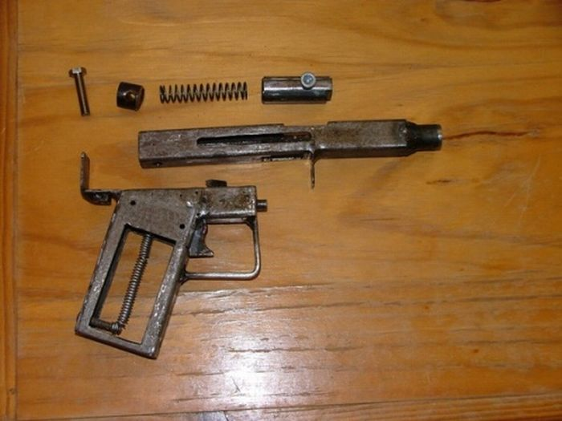
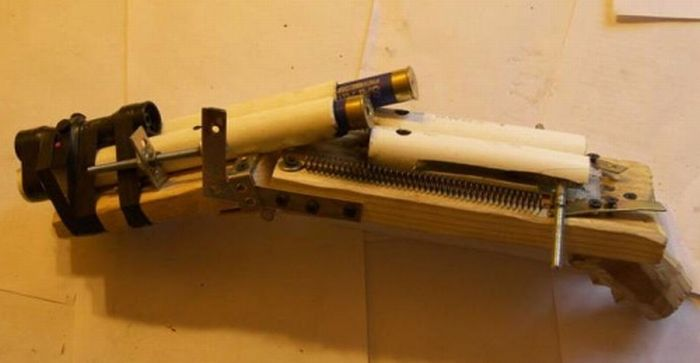
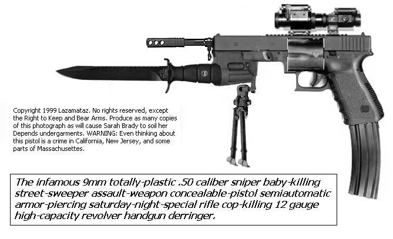
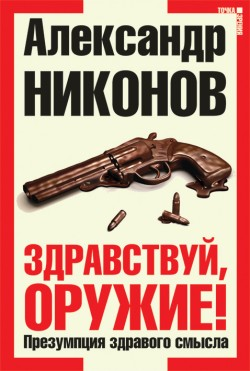

Сборная солянка
"Контраргументы" от irvara
http://irvara.livejournal.com/371264.html
У меня задействована программа, сообщающая о любых упоминаниях моих постов и коментов. С её помощью получила вот намедни ссылку на такую "аналитику": ../94/hop/hoplophobia1.html
В ней некий аноним проделал, несомненно, весьма нехилый труд, разобрав по абзацам и строчкам мой пост "Прощай, оружие!" и все многочисленные комменты к нему.
Большое человеческое спасибо ему за это. Сам того не подозревая и совершенно не планируя, он ещё раз показал, насколько убедительны мои позиции и насколько смешон лепет моих оппонентов-огнестрелострадальцев ;-) Жаль, что как и большинство "храбрых" огнестрелострадальцев, неудержимо рвущихся к оружию, он пишет анонимно. А то, ей-богу, не пожалела бы даже поощрить его персональной премией за такую отличную пропаганду моих идей =)
Очень наглядно: как много контраргументов приведено, вы только посмотрите! Самое смешное: мало того, что вместо контраргумента идет переход на личность с ходу -- чистейшая демагогия, -- так еще заявить, что я -- аноним, это надо умудриться. Наглядно показывает уровень развития, что характерно.
Еще один опрос от santagloria
http://santagloria.livejournal.com/688524.html/a>
Опрос #1756778
Огнестрельное оружие
Открыт: Всем, подробные результаты видны: никому, участников: 500
Огнестрельное оружие для рядовых граждан (хранение, не ношение) должно быть
разрешено


 344 (69.1%)
344 (69.1%)
запрещено


 64 (12.9%)
64 (12.9%)
разрешено для отдельных категорий *


 90 (18.1%)
90 (18.1%)
Если разрешать оружие, то это должно быть
приобретение и хранение


 152 (31.3%)
152 (31.3%)
хранение и ношение


 334 (68.7%)
334 (68.7%)
Будь такая возможность, я бы купил оружие
ни за что не купил бы и другим запретил


 46 (9.3%)
46 (9.3%)
не купил


 92 (18.6%)
92 (18.6%)
с радостью


 357 (72.1%)
357 (72.1%)
Оружие -это опасно
всегда, вне зависимости от того, в чьих руках


 198 (39.9%)
198 (39.9%)
только для неподготовленных


 228 (46.0%)
228 (46.0%)
не опасно, если не нажимать на курок


 70 (14.1%)
70 (14.1%)
Мне было бы спокойнее, если бы у меня хранилось дома оружие
да


 351 (71.3%)
351 (71.3%)
нет


 141 (28.7%)
141 (28.7%)
Я бы чувствовал себя беспокойно, зная, что у моих соседей дома хранится оружие
да


 171 (34.4%)
171 (34.4%)
нет


 326 (65.6%)
326 (65.6%)
Оружие, в основном, нужно для
насилия


 88 (5.0%)
88 (5.0%)
самозащиты


 391 (22.2%)
391 (22.2%)
увеличиния члена


 58 (3.3%)
58 (3.3%)
охотников


 282 (16.0%)
282 (16.0%)
охранников, военных


 277 (15.7%)
277 (15.7%)
спортсменов


 221 (12.5%)
221 (12.5%)
удовольствия


 241 (13.7%)
241 (13.7%)
самодисциплины


 206 (11.7%)
206 (11.7%)
Хотели бы вы иметь оружие и уметь им хорошо пользоваться?
да


 356 (71.9%)
356 (71.9%)
нет


 52 (10.5%)
52 (10.5%)
только если придется


 87 (17.6%)
87 (17.6%)
Хотели бы вы, чтобы ваши близкие (партнер, родители, дети) имели оружие и умели им пользоваться ?
да


 380 (76.9%)
380 (76.9%)
нет


 114 (23.1%)
114 (23.1%)
ККак видите -- за запрет оружия для граждан всего 13% ответивших. Впрочем, выборка мала и репрезентативной не является, так что интерес представляет не столько сам опрос, сколько комментарии к нему.
jolie_madame: моя позиция касается россии. запретить. запретить категорически. все. включая травматику. а то, что есть изъять.
за границей другая ситуация. и в разных странах она разная. в италии, сколько я знаю, охота - национальная забава. в нидерландах оружием интересуются маргиналы. и так далее.
santagloria: почему в России - изъять?
newvas: видимо потому, что за границей - национальная забава и все в белом, а русские медведей под дудку выгуливают и зубы рассолом полощуть.
jolie_madame: потому что российское общество принципиально инфантильно. а оружие детям не игрушка. это во-первых. во-вторых, в российском обществе очень сильна установка на насилие.
достаточно почти ежедневных сообщений об использовний травматики, где попало, с тяжкими последствиями, что бы придти к такому выводу.
мне не хочется вступать в дискуссию на эту тему. я просто объясняю свою позицию. думаю, на вопрос "зачем?" я бы все-таки ответила "увеличить длинну члена", а не то, что я отметила. опять же все это касается россии. другие страны - другая ментальность- другие традиции.
signamax: вот так взяли и записали весь народ в недоразвитые
вы замужем? своего мужа - если есть - вы тоже инфантильным считаете?
jolie_madame: у меня муж - лицо голландской национальности.
не вижу причины, почему я собственно должна оправдываться. хехекс.
m0rbid_desire: Это я вам, как лицо русской национальности, рукоплещу.
signamax: я уже кстати говорил как-то руганс что имхо основная проблема в россии с этим как раз в том что сферическая русская баба боится сферического русского мужика как инфантильного и жестокого ребенка которому ни в коем случае нельзя давать в руки "опасную" игрушку потому что в первую очередь боится за себя, во вторую что этот инфант по пьяни или инфантильности влезет в историю и попадет в турму
правда это или нет - вам решать
я уже лет 15 в россии не живу
но пока сферическая русская баба не скажет что "я мать троих детей и я за оружие чтобы защищать семью" - легалайза в россии не будет
пока что сферическая русская баба говорит " я мать троих детей и еще слежу чтобы это пьяное чмо не попало в какую-нибудь историю"
ну а особо отличившиеся выходят замуж за "лиц голландской национальности" и могут на оставшихся в россии пьяных инфантильных мужиков смотреть свысока
ngerus: есть такая проблема, но я не понимаю, насколько сейчас
велика эта сферическая баба
мне самой кажется очень странным считать законопослушных граждан более опасными,
чем преступники, у которых оружие будет всегда. ну или считать всех дебилами,
которые все сломают, потеряют и влезут в истории
stalker707: Вы сами тоже член российского общества? Значит, вы сами инфантильны, по вашему же утверждению.
А зачем слушать мнения инфантильных людей? Они несут бред, по определению.
mortus_36: Логикой её не проимешь, надо на эмоции давить типа это такие как ты лишили последнего шанса имярек-жертвы , получается такие как ты соучастники преступления, так как лишить оружия, все равно что связать руки бедной жертве перед сворой насильников и убийц. И фото приложить из уголовных дел разных маньяков что запросто обходятся молотками и прочими бытовыми предметами. А статистику, логику такие не понимают. Больные люди.
При этом дополнительно больны русофобией.
earth_blue: Если вы внезапно на меня нападете, я и мяукнуть не успею. Не то, что вытащить из сумочки пистолет. Ведь не на бедре же я его буду носить. И я пострадаю и вам пистолет достанется, без полугода обучения и разрешений.
Да и вообще, если давать массовый доступ к оружию, оно должно храниться дома на случай защиты жилища от вторжения. Но в наших московских реалиях жилище мало кому нужно, поэтому от оставленного дома оружия толку нет. /p>
denich: Пистолет в сумочке - все-равно, что его нет. На бедре или еще где носить - на ваш выбор. Но выхватывать его оттуда Вы должны научиться не дольше чем за секунду. Не нравится - не носите. Не покупайте. Но не нужно считать, что раз вам не нужно - никому не нужно. Носим. нужно.
earth_blue: Может быть, кому-то и нужно. Но оглядываясь на тех, кто рядом со мной, я уверена, что лучше без массово доступного оружия.
denich: Ну мне остается только вас пожалеть. Выбирайте себе окружение более разборчиво. И избавьтесь от привычки решать за других что им нужно, а что нет.
ВВсе же странные такие проекции: мол, я не смогу, значит, и другим незачем.
denich: Знаете, по моим наблюдениям, пока человек не в теме, он всегда против оружия. Точнее не то, шо не в теме, а пока его не обидели т.д. Пока он не заинтересовался этой темой и она его не коснулась каким-то боком. Ну иди в детстве был какой-то толчок. Слабый и инфантильный (общество ревет от восторга) начинает петь мантру: "запретить. отобрать. Общество не готово". Да он сам(а) инфантильный дебил, который не способен сам о себе заботиться и пытается переложить это, включая ответственность, на руки "шпециально обученных профессионалов". Я не зря приводил пример своего коллеги и своей жены. Оба были против. Но сейчас оба за. разве что моя жена была бы рада уменьшить количество времени, которое я уделяю оружию ;)
santagloria: вот это я и пытаюсь понять.
с одной стороны - мне кажется, что если ты не в теме - то ты будешь обязательно против./p>
а еще через 5 минут я смотрю на массу людей не в теме, но
вполне доброжелательно к теме относящихся.
ии вот понять бы, как именно они соотносятся, эти мнения.
denich: Нынче очень давят. Именно давят на мозги обывателя: оружие - это страшная штука. Оно убивает (мои ружья еще никого сами, без моего движения пальцем не убили). каждый кто хочет оружие - урод и т.д. Просто политика. Лучыше иметь куклу, чем вооруженного гражданина.
Уберите целевую аудиторию от телевизора да и вообще СМИ, поселите на хуторе и заставьте самих выращивать хавчик. Через месяц все в ЛРО придут за разрешением на оружие. И еще возмущаться будут, что автомат не дают ;)
earth_blue: Я категорически против оружия. Оружие - это всегда нечестно, это заведомое преимущество по силе, скорости и расстоянию. Рано или поздно к оружию, которое приобреталось и хранилось на законных основаниях, получают доступ необученные, неадекватные или обиженные. Оружие - это всегда драма. Даже если оно направлено против себя - именно наличие оружия в доме позволило одному моему знакомому застрелиться в приступа алкогольного помутнения. А мог бы жену застрелить попутно.
Оружие может быть исключительно у тех, кто противостоит преступникам или диким зверям.
tarkhil: "Рано или поздно к оружию, которое приобреталось и хранилось на законных основаниях, получают доступ необученные, неадекватные или обиженные". - статистика этого не подтверждает, но что нам статистика?
earth_blue: Я не хочу, чтобы кто-либо пострадал даже в результате единичного случая.
Вы считаете, что если бы, пока тот бешеный милиционер палил по покупателям в супермаркете, у кого-то из присутствовавших было оружие и он вступил в перестрелку - это было бы лучше? Я - нет. Но это сложно объяснить./p>
Да, очень сложно объяснить, почему было бы плохо, если бы маньков и психов, начавших стрелять в людей, пристреливали бы окружающие. Многие жертвы остались бы в живых -- и этого допускать нельзя! Сложно, сложно объяснить...
И, кстати: "оружие может быть исключительно у тех, кто противостоит преступникам" -- ну так все верно, если гражданину приходится противостоять преступнику, то надо бы иметь оружие. Но прогибиционситы как раз против!
earth_blue: Каждый взрослый здоровый человек однажды становится неадекватным под гнетом жизненных обстоятельств. Нужно иметь офигительную силу воли, чтобы не сорваться на крик, в агрессию, не швырнуть на пол чашку или телефон в стенку. Жизнь порой приводит нас в отчаяние.
И при наличии оружия у нас появляются другие возможности. Можно по-другому избавиться от боли, можно отомстить своим врагам, можно отыграться на собаках и мотоциклистах
po6om: Как думаете, это во всём мире так, или это российская мультинациональная традиция?
earth_blue: Я думаю, это в любом нездоровом обществе. В России оно не здорово.
po6om: А как бы вы назвали общества, скажем, Грузии или Молдовы?
earth_blue: Я не была ни там ни там. Те, кто доезжает до Москвы, в основном, тоже не здоровы)))
po6om: Вы будете удивлены, узнав, что и в Грузии, и в Молдове короткоствольное нарезное оружие АКА пистолеты/револьверы разрешены? Если что, Молдова обгоняет Россию по количесву потребляемого чистого алкоголя на человека в год. Вас не удивляет, что там нет массовых перестрелок при этом? Или у нас население - сплошь особо агрессивное пьяное быдло, в то время как чужеземное быдло, будучи пьяным, совершенно вменяемо, добро и любит весь мир? Я специльно привёл в пример бывшие советские республики. Кстати, в Прибалтике с пистолетами и револьверами тоже проще, чем у нас.
Да, и если говорить об оружии вообще, то оружие в России вполне себе легально. ЕМНИМС, более 6 млн владельцев оружия по всей стране. И владеют они оружием куда более смертельным, нежели те самые пистолеты и револьверы. Я имею в виду дробовки и нарезные винтовки и карабины.
volsukh: В Молодове, к тому же, недавно революция была. Люди вышли на улицы с палками и камнями...
elogim: Мне нужно оружие, чтобы убивать собак и людей.
Собак у нас выгуливают на кладбище, я бы их убивал из-за забора, а хозяевам - простреливал бы колени. А потом бы макал их ебальником в собачье дерьмо.
Еще бы я убивал мотоциклистов, которые ездят посреди ночи под нашими окнами со скоростью примерно 200 км/час, ДПС их не останавливает и не штрафует.
Также неплохо бы стрелять из пулемета по машинам, которые едут на красный свет, или не останавливаются у белой черты, а заезжают на зебру.
С большим бы удовольствием я бы стрелял из винтовки по ментам, когда они едут по пустой улице, включив сирену, зачем включать, когда никого нету, и это в 2 часа ночи?
Но больше всего я хотел бы стрелять по мотоциклистам. Если мне не дадут пистолет, я буду сыпать гвозди на перекресток.
Стрелять я умею, т.к. неоднократно стрелял в армии, и вне армии.
Стрелять в человека страшно только в первый раз. Когда стреляешь в колено - раздается такой характерный хруст, как будто наступил на фужер ногой.
mortus_36: Из пистолета это не серьезно, тем более по движущейся цели дробовик лучше. Вопрос что вас останавливает от покупки черного штурмового дробовика, для стрельбы по указанным целям 9мм картечью?
Логичный вопрос, да. Особенно с учетом того, что пуля из КС указывает на владельца оружия однозначно, в отличие от дробовика.
chulymka: Я высказалась против оружия. Мой отец работал в уголовном розыске, так что я выросла в доме с пистолетом. В подростковом возрасте научилась с ним (пистолетом) обращаться, а так же ознакомилась с ружьем. Тем не менее, меня оружие пугает.
Для самозащиты оно может понадобиться только тем людям, которые живут изолированно. В городских квартирах оружие совершенно ни к чему.
dilitant: Ага. Родственники этой женщины совершенно с Вами согласны:
Санкт-Петербург, 17 июня. В городе Кириши, в квартире дома 4 по Пионерской улице, в 00.25 МСК 17 июня гость обухом топора убил 48-летнюю хозяйку квартиры.
И этой - тоже:
В минувший четверг в одной из многоэтажек по улице Выборной неизвестные убили мать двоих детей прямо в ее собственной квартире.
chulymka: И что? Вы считаете, что наличие оружия в доме могло спасти этих 2-х женщин?
elusive_joe: У меня ощущение, что противники КС, считающие что с ними ничего не может случиться, живут в какой-то сказочной стране эльфов, где пони едят радугу и какают бабочками...
moris_gerald: Я спортсмен, стреляю из пистолета. Годовой настрел у меня такой, что рота солдат столько не настреляет за всю жизнь. :) Так вот, нигде я не чувствую себя в такой безопасности, как на стрельбище, где у каждого под рукой - крупнокалиберный пистолет и ведро патронов.
Конечно, КС надо разрешить. Но процедура получения лицензии должна быть очень хорошо продумана. Иначе будет та же самая хрень, что и с травматикой.
С травматикой, напомню, хрень именно потому, что травматика -- т.е. "длинный кулак" + пуля не идентифицируется.
santagloria: меня в местном открытом тире поразило огромное количество птиц, шныряющих между стойками и мишенями.
одно из самых спокойных мест в Риме для птиц, наверное)
trmpnghdghg: В Питере на территории спортинг-клуба (Олимпиец) есть прудик с домиком для уточек. И уточки там живут. Причем прудик на той части территории, куда летят тарелки.
В Москве (спортинг-клуб Москва) пасутся олени и есть вольер с кабанчиками.
Эти странные агрессивные люди с оружием почему-то в них не стреляют :)
elusive_joe: Кошмар какой-то =). Наверное, дожидаются, когда зверюшек станет побольше, чтобы устроить кровавую баню =)
moris_gerald: Однажды во время соревнования, которое проходило в подвальном тире, к нам в галерею забежала кошка и спряталась за пулеуловителем. Стрельбу прекратили, попытались поймать кошку, но безуспешно. В итоге возобновили стрельбу, но судья объявил кошку "ноу-шутом" (no-shoot), т.е. непоражаемой штрафной мишенью, и мы продолжили соревнование.
Кошка не пострадала. :)
Из ЖЖ mpopenker
http://mpopenker.livejournal.com/1308221.html
iincis0r: Да ну, это даже не прогибиционизм. Сгусток комплексов, построеных на домыслах и вымыслах. Кмк пациенты проецируют на окружающих свою паранойю и безответственность. И очень понравилось, что все, значит, мужики инфантилы, а поциентка, желающая расслабиться и получать удовольствие спрятать голову в песок, очень взрослая, значит.
hyperprapor: Ггг. Янки это круче сформулировали: "Если кто-то требует запретить оружие, потому что преступник может им воспользоваться - это нормально. Но когда я покупаю оружие для защиты от преступников, и тренируюсь в его применении - я параноик."
Ага, метко.
duskwight: Формулировки фантастические: "оружие не опасно, если не нажимать на курок" - я вот например считаю, что на оружии, находящемся в исправном состоянии, если вы не чемпион по изгибанию подков и пятаков, жать на курок бесполезно - жмут-то обычно на спуск.
nimravus_cub: у ряда девайсов курка вообще нет как такового)))
duskwight: Об то и речь. Но уж если есть... чуть нажал и бабах!
Кстати еще одно интересное - а на что маньякам-убийцам-ганофилам жать у моделей со скрытым курком? Только не говорите что сверлить корпус и спичечкой ;)/p>
(Анонимно) "Рано или поздно к оружию, которое приобреталось и хранилось на законных основаниях, получают доступ необученные, неадекватные или обиженные".
Попенкер, видимо, считает, что подобное невозможно в принципе.
Вот несколько примеров таких трагедий. Они могут шокировать.
17-летний Тим Кретчмер 11 марта расстрелял из пистолета учеников и учителей своей бывшей школы в городе Винненден, на юго-западе Германии неподалеку от Штутгарта, убив в общей сложности 15 человек, а позже покончил с собой. У подростка был достаточный опыт обращения с огнестрельным оружием, так как он часто ходил вместе с отцом в оружейный клуб, членом которого тот является. Пистолет Beretta калибра 9 мм он раздобыл у своего отца, который как член оружейного клуба легально хранил у себя дома 16 стволов.
Источник: http://www.rosbalt.ru/main/2009/03/13/625464.html
Ещё: 15-летний подросток расправился сначала со своими родственниками, а затем с одноклассниками. Джеф Виз начал свой кровавый «сериал» с того, что убил своих дедушку и бабушку. Причем расстрелял их из пистолета своего дедушки — ветерана полиции. Войдя в школу, Виз убил охранника, а затем поднялся в родной класс, где открыл беспорядочную стрельбу. Он убил пять учеников, а также 62-летнюю учительницу. Ранил еще 15 школьников, после чего покончил с собой.
Источник: http://www.rg.ru/2005/03/22/xronika-anons.html
И ещё: 29 февраля 2000 г. в начальной школе в штате Мичиган шестилетний первоклассник случайным выстрелом из пистолета убил одноклассницу.
Он стал самым молодым школьником-убийцей в США.
Источник: http://www.rg.ru/2005/03/22/xronika-anons.html
Короткостволисты,видимо, убеждены в том, что их дети не могут стать жертвой подобных отморозков с оружием.
mpopenker: За что я люблю боевых анонимусов - так это за то, что они всегда лучше других знают, что эти самые другие думают и считают.
И потом доблестно борются с голосами в своей голове, вместо того, чтобы сперва выяснить, а что в действительности думает их оппонент.
(Анонимно): Вам известна разница между утверждением и предположением?
Если не понятна, то я задам вопрос прямо. Считаете ли Вы, что попадание легально хранимого оружия в руки "необученных, неадекватных или обиженных" людей в принципе невозможно?
mpopenker: я считаю, что эта проблема безусловно существует
а также что польза от массового распространения легального, полноценного нарезного огнестрельного оружия (а не ублюдочных резинострелов) в нише оружия самообороны перевешивает негативные аспекты этого же явления
равно как польза от личных автомобилей в глазах ширнармасс перевешивает их очевидный (и огромный) вред. то же самое относится и к другим достижениям цивилизации.
За запрет весьма опасных автомобилей мало кто ратует -- именно потому, что польза от них статистически больше. А вот в случае КС мозги у хоплофобов отключаются, и лезут наружу иррациональные страхи.
fvl1_01:
Возражение же против "короткостола по закону у населения РФ" у меня основное и главное только одно - при том уровне коррупции и всепродажности любых документов, при весьма "избирательном" правосудии что сейчас царит в стране, при том уровне адекватности работы правоохранительных органов что наблюдается - введение КС - это только усугубить те общественно-правовые нигилистические процессы что у нас и так идут :-) То есть врачи выдающие справки сейчас на травматику и вождение психам будут еще продажнее, судьи еще "неподкупнее", полиция еще "адекватнее". А приговоры будут как сейчас за грубые нарушения ПДД VIPами выноситься еще "дифференцированнее".
Стоит ли это - личного пистолета - не знаю :-)
Гражданское оружие вещь совершенно нормальное в гражданском обществе. Но у нас в РФ сейчас нет ни граждан ни общества :-) Может с этого стоит начать :-)
mpopenker: "врачи выдающие справки сейчас на травматику и вождение психам будут еще продажнее" -- Почему, если не секрет? в чем будет принципиальная разница?
ВИПы - это очень незначительная часть общества, к тому же у многих из них КС уже и так есть, наградной например.
в любом случае подход типа "сперва научись плавать, а потом нальем воды в бассейн" порочен принципиально.
К вопросу доступа к оружию преступников
http://users.livejournal.com/_s_o_n_y_/30516.html
Есть такой аргумент против права ношения оружия: "давайте лучше разоружим преступность, чем будем вооружать простых прохожих"!
Аргумент туп в самом корне: даже если предположить, что удалось полностью исключить попадание в руки преступников огнестрельного оружия, это всё равно не повод запрещать его носить.
Во-первых, если нападают трое с бейсбольными битами, то один "с голой задницей" всё равно ничего против них не сделает. Для защиты ему нужен пистолет. Настоящий, с металлическими пулями.
Во-вторых (и это даже важнее), если мы ухитримся даже вовсе искоренить уличную преступность, запреты на что-либо могут быть введены только в случае реальной необходимости, а не по принципу "а вдруг что будет". Реальная необходимость запрещать законопослушным гражданам носить оружие ещё нигде и никем не доказана.
Ну да ладно, предположим, что единственная причина носить огнестрельное оружие - это защита от преступников, вооружённых огнестрельным оружием...
Лично я тогда отвечаю на этот аргумент просто: "можете приступать хоть сегодня"! Только учтите, что над проблемой разоружения преступности работают десятки и сотни тысяч людей по всему миру, но решить задачу пока никому и нигде не удалось...
Я вам более того скажу: решить задачу полного разоружения преступности невозможно в принципе.
Даже предположим на минутку, что нам удалось перекрыть любой доступ криминала к заводскому оружию... Посмотрите ниже:

Пистолет под строительный патрон и шарик от подшипника, собранный ребёнком из подручного хлама.
При всей несерьёзности его внешнего вида, он легко разгоняет стальной шарик до скорости под 500м/с. Этого более чем достаточно, чтобы пробить череп и мозг.
Банде из трёх-четырёх преступников вполне хватит даже такого оружия для вооружённого ограбления банка: сразу при входе один из них вышибает мозги охраннику, демонстрируя серьёзность их намерений и возможности их оружия, а остальные занимаются собственно разбоем, пока он перезаряжается (на что, кстати, нужно всего секунды три-четыре).
Очевидно, если за дело возьмётся не ребёнок у себя дома, а хотябы слесарь в слесарной мастерской, можно сделать куда более совершенное оружие, в том числе многозарядное. И примеров этого хватает даже сейчас, когда преступники имеют доступ к ворованому с военных складов заводскому оружию. Если же такой доступ будет перекрыт, спрос на кустарщину возрастёт, а от того возрастёт и её производство. И тут уже ничего не поделаешь, искоренить производство того, что можно сделать где угодно из всякого хлама, невозможно.
Таким образом у тех, кому плевать на законы, оружие, при необходимости, будет всегда. Да, мы можем сделать так, что его будет меньше. Но лишь за счёт тех преступников, которым оно не очень-то и нужно. Т.е. можно добиться того, что на улицах прохожих будут грабить не угрожая пистолетом, а избивая бейсбольной битой (только хорошо ли это? может лучше пусть просто угрожают выстрелить, чем избивают?), но если надо обчистить банк среди бела дня, оружие всегда найдётся.
Еще несколько фото самопалов для наглядности:




А вот -- via hhyperprapor -- дробовик. из степлера, обрезка трубы, сраного тапка, сортирного шпингалета и прочего мусора. Эффективность запретов того, что можно сделать в любом сарае - можно представить полностью:
Легализация оружия поможет российской экономике
http://delyagin.ru/articles/13040.html
Вопрос легализации оружия довольно часто обсуждается в обществе и СМИ. Однако, помимо роста преступности, у сторонников легализации теперь появился еще один довод в пользу их точки зрения – экономический эффект от этой меры, по подсчетам экспертов, составит $14,6 млрд за первые пять лет.
Жизнь в современной России не позволяет оставить без внимания проблему легализации короткоствольного оружия. "Разгул часто безнаказанной преступности, во многом объективно обусловленная антимилицейская кампания в сочетании с предстоящим расширением прав сотрудников органов внутренних дел далеко за пределы здравого смысла (с 1 января 2011 года – по законопроекту "О полиции"), обострение межнациональных отношений и просто нарастающая неуверенность масс россиян в завтрашнем дне вновь ставит в повестку дня вопрос о легализации короткоствольного боевого оружия (пистолетов) с правом их скрытого ношения", - отмечает директор Института проблем глобализации Михаил Делягин.
О юридических, социальных и моральных аспектах этой проблемы уже сказано очень много. Однако об экономических последствиях легализации оружия говорят редко, хотя этот аспект может стать весьма весомым.
По мнению Михаила Делягина, если оружие будет легализовано, это не только принесет прибыль от продаж гражданам, но и поспособствует открытию различных сервисных служб (обучение пользователей, подготовка их к экзаменам на право приобретения пистолета, оплата медицинских и иных справок, продажа боеприпасов, услуги тиров и стрельбищ, ремонт пистолетов и, возможно, контроль их технического состояния). Новые виды экономической деятельности принесут казне доходы от ее налогообложения.
Помимо прямых эффектов для экономики, легализация сможет привести ко многим косвенным последствиям. Возникнет растущая подотрасль экономики, которая сможет стать выгодным объектом для инвестирования. Кроме того, косвенный эффект, по мнению Делягина, может наступить из-за снижения уровня преступности (эксперт приводит в пример успешный опыт США, Прибалтики и Молдавии). Также из-за легализации оружия возникнут новые формы страхования, в том числе – обязательное страхование гражданской ответственности (по аналогии с ОСАГО).
Однако, оценить как косвенный, так и прямой экономический эффект весьма сложно. "Логично предположить, что боевое короткоствольное оружие, продаваемое населению, будет, помимо общего налогообложения, облагаться и акцизами. Однако величина этих акцизов зависит от конкретных решений органов государственного управления и в настоящее время представляется непредсказуемой. Соответственно, непрогнозируемым является и прямой экономический эффект от налогообложения производства и продажи пистолетов населению и сопряженных с этим сервисных видов деятельности", - подчеркнул Михаил Делягин.
Тем не менее, эксперт уверен в том, что легализация оружия принесет весьма существенные доходы в бюджеты депрессивных регионов, что снизит их зависимость от федеральной помощи.
Также эксперт говорит, что правительству, особенно на первых этапах, стоит поддержать отечественного производителя. Тогда потребителям будут доступна продукция российских оружейников, что позитивно скажется на внутреннем производстве.
"Опыт стран, осуществивших процедуру легализации боевого короткоствольного оружия, а также сложившаяся в России ситуация с обеспечением личной безопасности позволяет предположить, что в течение первых пяти лет насыщения рынка его приобретет примерно 20% мужчин и 5% женщин в трудоспособном возрасте", - прогнозирует Делягин.
В 2012-2016 годах среднегодовая численность этих категорий населения в нашей стране, по прогнозам Росстата, составит 43,6 млн мужчин и 40,5 млн женщин. Таким образом, емкость рынка продаж боевого короткоствольного оружия в течение пяти лет после его легализации может составить 10,7 млн единиц.
"Данная оценка представляется консервативной, так как некоторая часть граждан (коллекционеры, подражающие профессионалам любители, а также боязливые граждане) будут приобретать более одной единицы боевого короткоствольного оружия", - полагает Делягин.
Для тех, кто сомневается в таких прогнозах эксперт приводит следующие цифры: по данным МВД, уже в 2004 году на руках граждан России находилось около 6 млн стволов личного оружия. При этом, по оценкам специалистов женевского Института международных исследований (Graduate Institute of International Studies), в 2007 году в России оружием обладало 9% населения, а общее количество единиц огнестрельного оружия в стране достигало почти 13 млн стволов.
При этом, по информации из блогов, один пистолет ПМ для спецподразделений в прошлом году стоил 2,99 тыс.руб. "Логично предположить, что данная цена формировалась в период формирования федерального бюджета на 2009 год, то есть до перехода кризиса в острую фазу, примерно в середине 2008 года. Таким образом, указанная цена является докризисной и должна быть проиндексирована; для упрощения дальнейших расчетов представляется целесообразным применить стандартную для коммерческой сферы процедуру индексации при помощи перевода цены товара в доллары США", - говорит Делягин.
Таким образом, по подсчетам эксперта, цена одного пистолета может составить $171,3. При этом стоит учитывать, что цена оружия для спецподразделений вряд ли является рыночной. "В отношении продажи населению товаров не первой необходимости мотивы сбережения средств покупателя (в качестве которого будет выступать не само же государство, а население страны) не будут действовать. В условиях объективной монополизации производства и вероятного ажиотажного спроса (ибо производство не готово к массовому спросу и в силу сложившейся в российском ВПК культуры управления не сумеет быстро отреагировать на него) приведет к завышению отпускной цены производства примерно в два раза; действие аналогичных факторов в торговле приведет к аналогичному по масштабам повышению цены уже в торговой сфере, что позволяет рассматривать вероятную цену пистолета ПМ в розничной продаже примерно на уровне $685,2", - делает вывод эксперт. Из этих подсчетов следует, что стоимостная оценка рынка боевого короткоствольного оружия составит около $7,3 млрд.
Оценить емкость сервисных рынков намного сложнее, так как они разнородны и сильно зависят от режима регулирования – как официального, так и неформально складывающегося. "Однако, поскольку на рынках услуг проявляются те же тенденции закономерности, что и на товарных рынках, можно предположить, что емкость сервисных рынков примерно соответствует емкости рынка боевого короткоствольного оружия", - говорит Михаил Делягин.
Поэтому общий прямой экономический эффект от легализации боевого короткоствольного оружия за первые пять лет легализации, по подсчетам эксперта, только по указанным двум позициям составляет около $14,6 млрд.
А. Торшин, Самооборона: Уроки Сагры
http://www.vedomosti.ru/newspaper/article/264226/uroki_sagry
Вряд ли кому-то из читателей нужно пересказывать хронику трагических событий, случившихся в начале июля в небольшом уральском поселке Сагра.
Конфликт между жителями привел к бандитскому налету на село и ответной организованной самообороне граждан, в очередной раз продемонстрировал бездействие полиции, особенно заметное на фоне высокой мобильности и организованности криминального сообщества.
События в Сагре заставляют по-другому взглянуть на будущее России… Все произошедшее напоминает хронику времен Гражданской войны, когда по просторам страны носились всевозможные банды на тачанках, захватывая села. Разница только в том, что сегодня лихие махновские повозки сменились автомобилями. Железный конь пришел на смену крестьянской лошадке!.. Шутки шутками, но ситуация плачевная. По стране свободно перемещается караван автомобилей, набитых вооруженными бандитами, которые едут захватывать село. И селу приходится принимать бой, чтобы не сдаться на милость победителей. У людей в такой ситуации могут возникнуть вопросы. А куда смотрит власть? И почему отдельные представители власти, прибыв в поселок уже после боя, кинулись не разыскивать преступников, а начали… с ареста обороняющихся? Почему полиция оказалась на стороне бандитов? И насколько эффективна такая полиция?
У меня ответов на эти справедливые вопросы нет. Более того, я сам могу их продолжить. Меня, например, крайне интересует, как вышло, что в нашей стране люди, которые обороняют свою жизнь, здоровье или имущество с оружием в руках (не только в Сагре), зачастую оказываются на скамье подсудимых — там, где должен сидеть преступник, а не его обороняющаяся жертва? Почему вся система следствия и правосудия стоит на защите интересов преступника, а не нормального гражданина? Наконец, отчего законопослушному человеку просто нечем защитить свою жизнь и жизнь своего ребенка на улице — не носить же с собой двустволку, а травматик неэффективен…
Когда-то жители Российской империи имели право приобрести в целях личной безопасности пистолет или револьвер. Тогда государство своим гражданам доверяло. После революции у народа оружие было фактически отобрано, а с ним и право на самооборону. С безоружным стадом проще и безопаснее расправляться — можно хватать любую овцу и без всякой опаски резать. Этим и пользуются сейчас бандиты. Они знают: жертва безоружна, ей нечем ответить. А бандит всегда вооружен, ему не нужно разрешение от государства. Возникает ситуация несправедливого неравенства, когда преступник априори имеет преимущество. А должно быть наоборот!
Часто приходится слышать, что если «нашему народу разрешить оружие, все тут же перестреляют друг друга». Трудно согласиться с этой чепухой. У некоторых жителей Сагры, к счастью, было легальное оружие, что и позволило им защитить своих женщин и детей. Почему же они не перестреляли друг друга еще до приезда бандитов? Почему сами бандиты не перестреляли друг друга до приезда в село, ведь у них тоже было оружие и они тоже, к сожалению, часть «нашего народа»? Не стоит держать людей за идиотов! Лучше оглянуться по сторонам и посмотреть, как живет постсоветский народ в дружественных республиках. В Литве, Латвии, Эстонии, Молдавии у граждан есть право на ношение пистолетов и револьверов. При этом в перечисленных странах проживает до половины русского населения (отмечаю специально для тех, кто думает, что русским нельзя доверять оружие). И никто никого не перестрелял! Напротив, во всех республиках после легализации оружия отмечалось снижение насильственной преступности — кое-где до двух раз. И понятно почему: на чаше социальных весов легальное гражданское оружие является противовесом нелегальному, бандитскому. Каждый преступник, планирующий противоправные деяния, должен понимать, что легкой добычи после появления оружия у граждан не будет. Безнаказанно поглумиться над беззащитной жертвой уже не удастся — можно и на пулю нарваться.
Говорят также, будто неопытным людям, особенно женщинам, пистолет все равно не поможет: изнасилуют, да еще и оружие отнимут. Однако бесстрастная американская статистика отмечает: более чем в 80% случаев попытка изнасилования проваливается, если женщина вооружена, а вот безоружным удается отбиться от насильника только в 5% случаев. Удивительный результат, не правда ли? Кто бы мог подумать, что оружие помогает обороняться! Говорить, будто женщина в силу природных свойств не сможет воспользоваться пистолетом, все равно что заявлять, будто она не может водить автомобиль. Миллионы женщин за рулем опровергают этот шовинистический тезис.
Нет ни одной страны мира, где бы легализация оружия вызвала всплеск преступности. И есть множество стран и отдельных штатов, где легализация снижала преступность. Равно как и наоборот: история знает многочисленные, к сожалению, примеры того, как разоружение населения развязывает руки преступности.
Разумеется, было бы лучше, если бы полиция предотвращала все 100% преступлений и у граждан вообще не было нужды в инструменте самообороны. Но такое возможно только в идеальном мире — в раю, наверное. А на практике преступники отчего-то имеют нехорошее обыкновение нападать на людей вне отделений полиции и в местах, где не наблюдается ни одного полицейского. Когда эта ситуация изменится, когда преступники будут в письменном виде предупреждать жертву и правоохранительные органы о готовящемся преступлении, вот тогда противники вооружения окажутся правы.
Но вернемся к Сагре. Эта история показала в очередной раз, что власть и народ зачастую не слышат друг друга. Более того, учитывая, что местный криминалитет нередко подкармливает финансами местную полицию, ясно, кого будут защищать представители власти в конфликтах — бандитов. Кто платит, тот и заказывает музыку. Именно так и произошло поначалу, до вмешательства Москвы, в Сагре с местными правоохранителями, которые начали с арестов людей. Это означает, что Россию, если мы хотим ее сохранить, нужно «пересобрать» снизу. Нужно, как правильно заметил недавно Дмитрий Анатольевич Медведев, разрушить избыточно прочные, не дающие живой гибкости властные вертикали, необходимо передавать больше властных полномочий на места — людям. Я говорю и о политических полномочиях, и об экономических.
Ну и, разумеется, необходимо вооружение граждан. Если власть не в состоянии справиться с бандитизмом, это сделают сами люди. Вооруженный народ имеет совершенно иной градус самооценки. И власть разговаривает с таким народом совершенно другим языком.
В США право граждан на оружие закреплено знаменитой «второй поправкой к конституции». Вопрос настолько серьезен и основополагающ, что не исключаю, что и в современной России речь может идти о конституционной поправке, гарантирующей гражданам право на эффективную защиту жизни своей и окружающих.
С легкой руки журналистов идея уже получила название «поправки Торшина», но авторство здесь принадлежит не только мне. У сторонников легализации гражданского огнестрельного оружия в России множество союзников: знаю это не понаслышке. И это действительно гражданская поддержка, а не «оружейное лобби». Производителям как раз выгоднее клепать дешевые и неэффективные «травматики», чем разрабатывать новые конкурентоспособные отечественные модели гражданского оружия.
Повышение вооруженности общества — процесс поэтапный. Начать можно с создания национальной гвардии по рубежам России. Когда-то роль приграничного вооруженного буфера в Российской империи выполняло казачество. Кто мешает возродить его в виде национальной гвардии — людей, у которых дома автомат или винтовка и которые по первому мобилизационному зову обязаны собраться в условленном месте? В первую очередь в этом нуждается Ставрополье, граничащее с неспокойным Кавказом.
Считается, что в нашей стране невозможно осуществить что-то, если не заручиться поддержкой первых лиц государства, а Путин, например, против вооружения народа, поскольку не верит ему. Это неправда. Владимир Владимирович еще не высказал своего мнения по поводу защитников Сагры, отстоявших свой поселок от терроризирующей его банды. Но зато он высказал свое мнение в абсолютно аналогичной ситуации десятью годами ранее, когда банды чеченских террористов вторглись в Дагестан и местные жители встретили бандитов огнем своих пулеметов и автоматов. Нелегальных, разумеется. Путин выразил защитникам отечества благодарность. И даже не спросил, откуда у гражданских лиц пулеметы. Он просто воочию увидел, что нашему народу оружие доверять можно. И в Дагестане, и в Сагре, и везде.
О гендерном отношении к войне
http://serg-xzov.livejournal.com/21931.html
Интересная гшипотеза. Термин "архетип" применен криво, но о чем речь -- понятно.
Беседовал в Контактах с одним милым существом женского рода. Существо попросило меня пояснить фишку о том, почему у женщин и мужчин различное отношение к войне. Я пояснил, но, кажется, не вполне угодил. Деве хотелось чего-то более поэтического.
Я: Фишка простая. В первобытной древности в случае войны двух племён победившее племя обычно полностью уничтожало мужчин проигравшего племени. А вот женщин не уничтожали - их брали в качестве трофея. Из молодых делали новых жён, пополняли гарем, а из старых - новых рабынь.
В результате для мужчины поражение в войне означало однозначную смерть. А для женщины - всего лишь смену полового партнёра. Это отложилось как архетип.
Поэтому и сегодня женщины неохотно говорят о войне, не интересуются ею, не желают о ней ничего знать, война для них - досада и помеха их обычной бытовой жизни, не более. А для мужчин война - значимая тема.
СУЩЕСТВО: А разве не глубже ли проблема?
Для женщины война - это разрушение, хаос, тревога, смерть, (может не ее, но племени или рода), а по природе - она хранительница рода, ее задача давать жизнь, растить и оберегать потомство.
Природа заложила в женщине постоянство, не желание глобальных перемен, так как это опять же не способствует гармоничному и безопасному выживанию потомства.
Просто смена партнера - мне кажется кажется мелковато для не любви к войне.
СНОВА Я: Природа проще, чем принято думать. Я часто наблюдал, как женщины реагируют на разговоры о войне, оружии, возможных в будущем боях.. Им скучно, им просто скучно, настолько, что они начинают возмущаться.
Если бы причиной этого была установка "растить и оберегать потомство", они бы внимательно слушали и делали для себя заметки на будущее. Но нет - им не интересно. И это "природой заложено", то есть устаканилось в архетип.
Допустим тебе говорят: вчера Вася вышел без шапки и простудился так, что попал в больницу с воспалением лёгких, чуть не помер, хотя на дворе только ранняя осень. С каким чувством ты это слушаешь? "Ой, надо мне шапку завтра надеть и всем своим тоже сказать, чтоб надели, а то погода коварная - кажется, что ещё тепло, а на самом деле уже холодно, вон как Вася попал!". Правильно? Это есть проявление установки на самосохранение и сбережение своего рода (детей, родственников и т.д.).
А с каким чувством ты слушаешь про войну? "Ой, да никакой войны не будет, с чего вы взяли, да всё будет хорошо, не выдумывайте вы и не пугайте сами себя, хватит уже!". Вот это "всё будет хорошо" и есть проявление архетипа, который говорит женщине, что С НЕЙ, конкретно с ней, в случае войны действительно ничего особо страшного не случится.
У мужчин на это счёт другое чувство возникает. Об оружии и войне мы можем говорить часами, даже если НИКАКОГО отношения к этому не имеем. Я, например, даже в армии не служил, и в семье у меня НИКОГО военных нет. А об оружии и войне - ЧАСАМИ.
Играют ли девочки в игры стрелялки? Нет. А мальчики всех возрастов - ЧАСАМИ.
И последнее. Как мальчики и девочки в школе читают "Войну и мир"? Девочки с удовольствием читают про "мир" про Наташу и Андрея, про её первый бал и т.д.. Но почти совсем не читают про "войну". А мальчики - наоборот: про Натали им не интересно, а вот про шенграбинский редут и батарею Тушина - это самое оно! ;-))
ОТВЕТ: значит, у современных женщин плохо развито чувство самосохранения :)
а потом, какие выводы можно сделать из разговоров о том, какое оружие лучше - "калаш" или "макаров", ей вроде как его в руках не держать, так как есть вы - мужчины, приоритетные задачи у них другие, а от задач и интересы
хотя очень важный навык - уметь обращаться с оружием, я вот всегда хотела пострелять из боевого, почувствовать, насколько сильна отдача и смогу ли в критический момент им воспользоваться.
Я: Значит, ты - исключение. В любом правиле есть исключения. :-)
Скука женщин по поводу войны ТОТАЛЬНА и распространяется не только на типы оружия. Им скучно про тактику, про маскировку, про бронежилеты и каски, про выживание, про убийство людей, про то, как в каких странах, когда и чем люди воевали и т.д. То есть весь комплекс разговоров о войне для них малозначим.
Добавлю, что дело не только в половой принадлежности: понятно, что традиционно войной занимались мужчины, а женщины -- "хранением очага" и т.п. Мужчинам обычно разговоры об уходе за мелкими детьми, скажем, аналогично не интресны.
Здесь важно другое: не женский, а именно бабский взгляд "ничего-плохого-не-случится, оружие-это-страшно-оно-специально-для-убийства" и проч. прогибиционистами продвигается как легитимный. Видели истерики на тему "дитятко ушибло пальчик" или чего-то подобного? С непременным "и больше не трогай молоток" вместо "надо учиться бить не по пальцу"? Ровно то же самое.
lokamp: несколько мыслей на тему "оружие и граждане"
http://lokamp.livejournal.com/63904.html
Сколько раз себе говорил - не ввязывайся в спор с противниками оружия, не ввязывайся! Если уж ввязался - не приводи аргументы, их никто не слушает. Привел аргумент - так хоть не оставляй свидетелей и отпечатков пальцев ... В общем заезжал я сегодня еще раз к вышеупомянутому клиенту. Ну работа у меня такая, изредка навещать клиентов, чтобы не забывали как красиво выглядят их деньги на моем счету. Приезжаю, время уже не рабочее, но несколько сотрудников, ударными темпами претворяют в жизнь капиталистическую пятилетку в четыре года, как нашенский ответ ихнему кризису ... Приехал, кофейку мне сбацали, пирожок мне выдали и в пустующее кресло усадили. Сбросил я куртку, смотрю у сотрудницы глазки округляются - кобуру увидела. Эка невидаль скажете и будете таки правы, шоб Вам жить долго и богато ... Ан нет, сотрудница, назовем ее Бригитой, решила проявить свои управленческие способности и с нажимом в голосе поинтересовалась:
- А это у Вас собственно что?
Посмотрев в направлении ее жеста обнаружил свой ремень, а ниже ремня ессно джинсы. Немного подумав догадался, что ее не моё комиссарское тело интересует, а кобура с Глоком ...
- Это? состроив самое доброе выражение лица, - Глок. Пистолет такой.
- А зачем он Вам и откуда?
- Хм ... Зачем, сказать трудно. А откуда, - из магазина ессно.
- Газовый?
- Нет упаси бог от этих игрушек, настоящщый.
- Как так?
- А вот так ...
Уже не в первый раз встречаю людей не знавших, что помимо ха-а-азового оружия, в Литве можно иметь настоящее. Кстати проводили как то опрос среди граждан - так около половины опрошенных, рванув пОльты на груди, орало, что никак-с нам этого оружия давать нельзя, - перестреляем нахрен друг-друга. „А мужики то и не знали“ ... Уже лет десять можно, а оказывается - нельзя! Стрелять начнем, „Убийцы!“ (к/ф Тот самый Мюнхаузен)
И вот такая Бригита, прости меня оссподи, этой темой совершенно не интересуясь, лепит фразу, которую любят повторять разные придур чиновники, - НЕТ СВОБОДНОЙ ПРОДАЖЕ ОРУЖИЯ.
Ура! Бис! Браво! Брависсимо!
Вы знаете, я тоже. Я тоже против свободной продажи оружия. Я за ЛИЦЕНЗИРОВАННУЮ. Повторяю для чиновников, забывших русский язык и ботающих на новоречи - ЛИЦЕНЗИРОВАННУЮ, мать вашу вперехлест через клюз ... Почувствуйте то разницу ... Скажу больше, я даже за продажу газового оружия, строго по лицензии. Пусть упрощенной, но по лицензии. (В Литве газовое оружие продается по предъявлению паспорта и лицензии на приобретении и ношение не требует) Знаете почему? Потому, что если какой то идиот, решится меня ограбить, у меня времени не будет рассматривать что у него в руках - боевой или газовый ствол. Вещь, похожая на пистолет, как пишут в криминальных сводках, приведет к тому, что я просто пристрелю этого придурка. Оно мине надо? Так не стреляй, скажете Вы ... Вот уж фиг-с ... По закону я имею право защищать себя и своих близких. Кстати единственный, нормальный аргумент свободной продажи газового оружия, я слышал от Sanych'a - "Не хочешь, ты, боярин, чтобы я себе на Порше наторговал"
Ладно, оставим газовое в покое. У противников оружия еще и такие аргументы в запасе есть, как:
- понакупляют наркоманы и преступники разные, стволов и пойдут пулять по гражданам ...
Хм... Какие, якорь вам в задницу, наркоманы? Чтобы получить лицензию на хранение и ношение, надо предоставить кучу справок о том, что ты не наркоман, не придурок и прочее ... Кстати у нас еще и участкового напрягут, чтобы он по твоим соседям прогулялся, с целью поинтересоваться, что ты за зверь такой, в глазах окружающего люда ...
А ведь еще не все ... Сейф надо дома заиметь, да не простой так ящщык, а сейф, к стене или полу прикрученный. А еще курсы пройти и экзамены сдать. Сейчас правда курсы можешь и не проходить, если сам подготовится сумеешь. И это еще не все ... После всего этого, когда ты отправишься писать бумажку в разрешительный отдел, то первый раз тебе ответ придет... через месяц. Тебя еще там проверят, на судимости и прочее. Кстати наличие у тебя административного нарушения уже повод, чтобы тебе отказать. Вот скажите, пойдет на такие прогулки по кабинетам и экзаменам, простой дворовый хулиган? Ага, ща-аз ...
Ползем дальше. Помню в одной телепередаче один муд дядя в погонах достал ПМ и вручил девушке из числа зрителей, со словами: - вот я фулюхан, как вы будете защищаться? (за точность цитаты не ручаюсь, но суть такая) Так и тянуло этого дядю спросить - Вы дурак? Вы, человек стоящий на страже закона, и имеющий табельное оружие, нарушаете первое правило - „не давать свое оружие в руки постороннего человека“, хоть на передаче, хоть на даче. А если бы этой девушке, но вооруженной и после обучения попался, не дай бог конечно, такой придурок на дороге, так влепила бы она ему двойку в корпус так быстро, что он даже усмехнуться бы не успел.
Не все тренируются, чтобы эти самые двойки лепить, скажете Вы. Да, согласен. Мне знакомы несколько категорий владельцев оружия.
Первые - самые безобидные. Это вярслининкасы (бизнесмены), купившие пистолет как дорогую, не каждому доступную игрушку. Оружие у них, как правило лежит дома, в сейфе и иногда показывается гостям. Стреляют очень редко, разве что за компанию, с друзьями съездив в тир.
Вторые - люди редко тренирующиеся, но все же регулярно стреляющие. Для них оружие - мужская игрушка, вещь с историей и харизмой.
Третьи - как правило, полные отморозки. Жгут патроны, страдают на стрельбищах зимой от холода и от жары летом. Ездят на соревнования, тренируются дома всухую, при вопросе о месте отдыха первым будет - есть ли там стрельбище? Каждому свое, но знаете, что объединяет все три группы? Они имеют право на оружие и они им пользуются.
Вконец потерявшись в комментариях к своей писанине и утеряв нить дискуссии где-то на сотой реплике, решил подвести неутешительный итог. А также, обобщить, углубить и всесторонне развить некоторые аргументы ярых противником оружия. Самих противников рассматривать не буду, - во первых времени жаль, во вторых у меня оптика на винтовке не такая мощная, чтобы так далеко пулять, чай не в кино живем...
Аргумент первый - а у Вас хватит духу выстрелить в человека?
Как говаривал товарищ Сухов - "лучше бы, конечно, помучиться". Во-первых, у каждого человека свой уровень психологической подготовки. Среди моих знакомых много служивших и много воевавших - не думаю, что они войдут в глубокий Гамлетовский ступор "быть иль не быть, стрелять аль погодить изшо", если их жизни будет угрожать опасность. Вторая группа людей не воевавших, но рефлексы отработаны до автоматизма ежедневными тренировками. Откуда там время на подумать? Мигнула в мозгу лампочка "опасно для жизни" и всё, получите и распишитесь. Ах, Вы уже не дышите, ну надо же, ну тогда можете не расписываться, лежите ... Так что их реакция закончится вбитым рефлексом "if clear, hammer down, holster" ... Третья группа граждан, - да, могут впасть в глубокий ступор. До дрожи в коленях и заикания. Но эти люди и в повседневной жизни, как правило, не оказывает никакого сопротивления. Ни хамству, ни агрессии отпора не дадут, даже защищая себя... Кстати, у таких и оружия как правило нет - они его неосознанно боятся. Для них оружие это символ чего-то страшного, символ силы, которой они привыкли подчиняться, а не управлять ею. Кстати про символы. Само оружие не стреляет и не убивает - убивает человек. Оружие это инструмент, а не символ.
Аргумент второй - у вас отнимут пистолет и пойдут с ним грабить!
О ужас ... Эт значит я каждый день, нахожусь под пристальным вниманием преступников? Страсти-то какие! Каждое утро, бегая по парку, встречаю старичка, прогуливающего ньюфауленда по имени Раджа. Это они следят!? Я так и знал ... везде протянулись руки кровавой гэбни мафиозных структур, которые разрабатывают ужасные планы, как бы половчее дать мне по голове и отобрать Глок, ценой в 20 тыс.рублей. Нет? Не этот старичок? А кто? Паренек, ждущий на углу девушку из соседнего подъезда? Точно, у него под курткой не букетик цветов, а обрезок водопроводной трубы, чтобы оглушить и забрать ... Опять не он? А кто? А-ах ... шпана, гуляющая по городу и пристающая к прохожим, с целью обчистить их карманы? Вполне возможно, но ... Но как ни странно у гопстопперов тоже имеется голова на плечах и они не только "а еще я в нее ем". Вот и представьте, что для Гопстоппера проще - отобрать у меня Глок (20 тыс.рублей), рискуя получить законную пулю или купить на черном рынке газовый пистолет за 1000 рублей, с которым так же удобно грабить обывателей, практически ничем не рискую. Практически потому, что уже есть шанс нарваться на вооруженного обывателя, который просто пристрелит нападающего, причем на совершенно законных основаниях. Далее - если при обыске у Гопстоппера найдут боевой ствол - это статья и он прекрасно это знает. По какому там кодексу, административному или уголовному и какая там статья, мне глубоко пох - это запрещено законом и всё, нефиг тут спорить. А если найдут газовый пистолет или ножик из магазина скобяных изделий - ему ничего не будет. Что для него выгоднее и безопаснее в ношении?? Так что нападение, с целью завладеть оружием - это сказка для детей младшего школьного возраста.
Аргумент третий - вы не успеете применить оружие!
Если память мне не изменяет, в советской милиции был норматив - достать оружие и произвести первый выстрел - 4,0 сек. Причем оружие носилось в закрытой кобуре, с включенным предохранителем и без патрона в патроннике. Извините-с ... Достать пистолет из кобуры под курткой и произвести ДВА выстрела, для более-менее тренированного гражданина норма 1,5-1,7 сек. Причем не просто так выстрелы, а выстрелы по стандартной мишени IPSC. По 2 (двум!) мишеням произвести 4 (четыре) выстрела, средняя норма - 2,6 сек. Замечу, что это норма не спортивная, когда используются пистолет в открытой, спортивной кобуре типа Амадини хольстер, а обычная, повседневная кобура под курткой. Конечно, тихо подкрасться, подстеречь в темном подъезде и из за угла шваркнуть трубой по голове можно. Но в подъездах надо чаще менять лампочки, а улицы и скверики прекрасно освещены по вечерам.
Аргумент четвертый - будут уличные перестрелки!
Сиречь если у гражданина Пупкина выхватили барсетку и бросились бежать, гражданин Пупкин выхватит пистолет и начнет стрелять по убегающему человеку с криками - "В Марьину рощЧу он рвется, там есть где спрятаться!" Опять таки не согласен ... Применять оружие, по биоцели можно, когда возникла реальная угроза для жизни и здоровья. Какая угроза если у тебя барсетку украли? Не носи барсетку и проблем будет меньше. И перестрелок на улицах не будет.
Аргумент пятый - будут бытовые разборки с применением оружия!
Хм ... самым популярным оружием для бытовых разборок является обычный кухонный нож. Притом класс людей, которые как правило эти разборки устраивают пожалеют денег на пистолет. Потому что, если перевести цену пистолета на полулитры, получится такая радужная для этого гражданина картина, что он возлюбит весь мир, как самого себя.
Аргумент шестой - нужно больше милиции/полиции!
Вообще бред. Налогов я, как владелец фирмы и так плачу предостаточно, чтобы прокормить уйму бюрократов. К каждому Гопстопперу полицейского не приставишь.
Аргумент седьмой - оружие должно быть только у государственных служащих!
Вопрос у меня имеется... Это что же надо такое натворить, чтобы так бояться своего народа, а?
Аргумент восьмой: - а вот ваш ребенок найдет пистолет и убьет себя! (c) 10_4
Ребенка будет жаль. Но если я окажусь туп настолько, что у меня дома оружие будет валяться там, где до него сможет добраться мой ребенок - я вполне заслуживаю того, что моя генетическая линия на мне и оборвется.
Зачем нужно оружие: Уличные ограбления. Один из сценариев
http://hyperprapor.livejournal.com/246799.html
Иллюстрация к вопоросу "на вас нападут, и вы с КС все равно ничего не сделаете".
Тот самый - "Да к тебе подойдут сзади, стукнут в лоб, и все". Но есть нюансы и тут.
Товарищи уже написали и про "быстрые ноги", и про "пилочки для ногтей". Итак - двое орлов в хорошей физической форме, 19 и 21 года, с приличным списком подобных нападений. И жертва - 61 летний старик Эдвард Кёртис.
Сценарий тот самый - походя мимо, нападение без предупреждения - серия из 3-4 ударов, которыми у деда был сломан нос и были нанесены еще кое-какие повреждения лицевых костей.
Только вот Кёртис оказался хоть и старым, но довольно бодрым - трижды выстрелил в нападавших, улепетывавших вовсю как только ситуация изменилась не в их пользу. И как минимум он один раз попал. Но легко, оппоненты покинули место действия своим ходом.
Впрочем, вскорости они были задержаны и предстанут перед судом с обвинением в грабеже.
Жесть. Это уже за гранью
http://hyperprapor.livejournal.com/233894.html
А это -- к вопросу "как правительства заботятся о безопасности граждан", место действия -- Англия:
Тетка-фермер обратила внимание на каких то левых кадров занимающихся вырубкой деревьев на ее территории. Она этим была возмущена до крайности, что им и высказала.
Однако, Трейси Пирс, 50 лет, получила совсем не то, чего она ожидала - четверо колдырей пригрозили ей бензопилой и другим холодняком, пообещав прирезать и ее, и скот на ферме.
В ужасе тетка скрылась в дом и вызвала копов. Которые пилили до нее 35 минут.
К счастью, полиция все же прибыла и разрулила ситуацию. Тетка получила обвинение в эскалации конфликта: "следовало вежливо попросить нарушителей удалиться, вернуться в дом и набрать 999"... и у нее отобрали запертые в сейфе дробовики. С мотивацией, внимание: "В целях предотвращения нарушений правопорядка и охраны членов общества - мы приняли решение конфисковать законно приобретенное и хранящееся оружие."
И некоторые шизоиды еще возмущаются негуманностью Castle Doctrine... Ма-лад-цы!
Обыденность оружия
http://olegvolk.livejournal.com/940723.html
Сегодня я работал дома. Почти весь день прошёл в фотостудии или за компьютером. В отличии от одежды на выход, на домашнем наряде нет ремня с кобурой для 17-зарядного Глока. Только под вечер я заметил более лёгкую кобуру с меньшим 10-зарядным пистолетом у себя за поясом. Одеваясь, я нацепил её так же привычно, как другие люди одевают нательный крест. Компактный пистолет весит мало и удобен в ношении, не носить его причин нет.
Ношение пистолета у себя дома, в благополучном и безопасном районе, в основном -- не для самозащиты от маловероятных напастей. Если что, ружьё всегда под рукой и на порядок мощней. А пистолет с собой, как символ веры -- веры в способность постоять за себя и своих близких.
С точки зрения большинства cоветских людей, верующие были какими-то отголосками прошлого. Теперь же люди с крестиками не вызывают особого удивления. С точки зрения многих американцев конца прошлого века, люди носящие оружие тоже были отголосками старины. Теперь же в большинстве штатов люди с пистолетами за поясом особого внимания не привлекают. На человека с ружьём в руках в городской местности могут обратить внимание, но пистолеты -- явно оборонительные инструменты и сами по себе не воспринимаются как угроза.
Любые распростанённые технологии перестают пугать. Сочетание компьютера, фотоаппарата и телефона в одном приборе никого не удивляет...а не так давно владельца могли бы принять за шпиона. Оружие -- технология не новая, но многие относятся к ней с подозрением. Это чувство подозрения или неприязни, в основном, резултьтат государственных попыток заполучить монополию силы, используя пропаганду и законы, ограничивающие права граждан. На такой монополии когда-то держался феодальный строй, и многие правители хотели бы к нему вернуться.
Я живу в штате Теннесси. Население здесь вооружено чуть лучше среднего по стране, законы тоже чуть лучше среднего. Оружие носит ежедневно лишь каждый пятый-десятый человек, в среднем. Среди моих друзей, скорее, -- каждый второй. И, знаете, -- совсем не страшно. Сидишь в кафе с друзьями или коллегами -- у некоторых пистолеты на виду, а у остальных под пиджаками и блузками. У половины -- в багажниках серьёзные винтовки. Такая насыщенность атмосферы оружием напрягает ... не больше чем крестики, магендовиды или кирпаны. Люди не склонные к насилию не изменяются от доступа к оружию. А люди склонные ... среди безоружного стада волк с зубами или пастух с посохом -- царь и бог. А гопник с куском арматуры или пьяный мент с табельным Макаровым в магазине полном вооружённых покупателей скорее ближе к самоубийце.
Возвращаясь к нашим баранам: пистолеты можно смело считать дистанционными дрелями. Они помогают делать дырки на расстоянии нескольких метров. И я уже десять лет живу в штате, где эти "дрели" обыденны. Моя домашная дрель -- с подсветкой, лазерным целеуказателем и глушителем. Как ни странно, нo расстреливать мирное население не тянет. Христианских младенцев на мацу изводить тоже. Хочется жить так мирно как жил до сих пор, никого ни трогая и не давая себя в обиду ни людям, ни тварям. А символ веры пусть останется в кобуре за поясом. Он никому не мешает.
tank_irk_ru: Красиво написано. Давно заметил: оружейная культура идёт рядом с обыденностью оружия как такового. Это очень заметно у нас в деревнях на севере области, где охотничье оружие в каждом доме и не по одному стволу. Там практически нет ни несчастных случаев, ни криминального применения, если не считать за оное браконьерство и собственно тот факт, что немалая часть ружей никогда не регистрировалось :о).
Хоплофобский словарик
http://hyperprapor.livejournal.com/267165.html
Арсенал - наличие более одной единицы оружия и более одной коробки патронов одного калибра.
Высокомощные - любые боеприпасы, способные улететь дальше среза ствола и способные оставить хотя бы синяк.
Ганофил - любой, чье мнение по владению оружием отличается от "должно быть запрещено". Всякий попадающий под данную градацию - должен пройти проверку у психиатра.
Здравый смысл - любые меры, направленные на ущемление прав владельцев оружия.
Запреты - Законы, принятые под действием Здравого Смысла, направленные на регулирование доступности оружия желающим. (См. Ганофил).
Кожух Ствола - Штука которая идет вверх... Наиболее опасное дополнение к штурмовому автоматическому оружию. Должна быть запрещена. (Здесь отсылка к Barrel Shroud и тупой хоплофобше, ратовавшей за запрет, без знания, ЧТО это вообще такое).
Магазин - это место, где продается штурмовое оружие и обоймы. Слово магазин - применительно к боеприпасам, данной публике неизвестно в принципе.
Массовое взаимоуничтожение - социальное явление, которое неизбежно начнется, если убрать ограничения и запреты на оружие и "опасные предметы" (destructive devices). Только ограничения и запреты зыбко сдерживают миллионы спинномозговых безволосых обезьян, окружающих "здравомыслящего" (см.) "хоплофоба"(см.) от бесконтрольной и бессмысленной стрельбы, резни и грызни.
Невинные Дети - несовершеннолетние, с досье в 3 дюйма толщиной.
Одноразовый пистолет (Saturday night special) - любой пистолет, стоимость которого менее годового дохода.
Оружейное лобби - все владельцы оружия. Вступая во владение, они присягают темным силам и втайне желают поработить мир. Тратят все свои доходы на подкуп политиков для проталкивания своих безумных законов.
Оружие - неодушевленный предмет, тем не менее обладающий свободой воли и сомнительными моральными качествами.
Пистолет - предмет, единственное предназначение которого - убийство других людей. Должен быть запрещен.
Потенциальный убийца - всякий, у кого есть странное желание владеть оружием.
Пулемет - все, что способно стрелять от бедра. Сделан, чтобы убивать много-много людей. Должен быть запрещен.
Пуля-убийца - любая пуля, выпущенная не полицейским. Должны быть запрещены.
Самозащита - право вызвать полицию для составления правильного протокола.
Снайперская винтовка - любая винтовка, не являющаяся штурмовой. Должны быть запрещены.
Стрелковый спорт - всякая деятельность, являющаяся завуалированной подготовкой потенциальных убийц. Должна быть запрещена.
Убийцы животных - категория "ганофилов" (см.), врожденная трусость которых не позволяет им убивать "невинных детей" (см.), и, находясь в стадии "потенциальный убийца" (см.), они оттачивают навыки на беззащитных животных. Попутно они реализуют садистские наклонности и комплексы. Несомненно, наличие этих комплексов, не свойственных "хлопофобам" (см.), связанно с компенсацией дефектов подросткового развития, а также различными физическими и душевными недостатками.
Ударно-дробящее оружие - всё то, что изготовлено из материала твёрже человеческого черепа и имеет достаточные габариты и массу для нанесения повреждений. По убойности значительно уступает огнестрельному оружию, но, на самом деле, гораздо коварнее последнего: его НЕВОЗМОЖНО запретить, не оставшись при этом без многих предметов мебели, инструментов и даже замороженной еды. Является ярким свидетельством несовершенства антиоружейного законодательства.
Холодное оружие - любое изделие из металла, о которое можно поцарапаться или уколоться. Если длина металлической полосы превышает 3" (76мм), то это ШТУРМОВОЕ холодное оружие. Интерес к холодному оружию свойственен потенциальным убийцам. Должно быть запрещено.
Хоплофоб - некто с высочайшими моральными принципами и превосходством в интеллекте, дающими им право на обвинение всех несогласных свысока, в т.ч. в каннибализме и растлении малолетних.
Штурмовая винтовка - любая винтовка, выглядящая "страшно". Должны быть запрещены.
Штурмовая обойма - любой предмет, подающий патроны, с емкостью более 1. Должны быть запрещены.
Штурмовое оружие - любое оружие, не созданное для спорта. Должен быть запрещен.
Штурмовой пистолет - любой пистолет, который не является Одноразовым. Должен быть запрещен для частного владения.
Экстремизм - любые взгляды на владение оружием правее Фиделя Кастро.
С последним не соглашусь: правые националисты -- контрпример.
Пугало для хоплофобов (Saturday night special):

Норвежская трагедия и контроль за оружием
По свеженькому, так сказать. Характерные мнения с обоих сторон.
http://ru-politics.livejournal.com/39139734.html
Широкой публике пора понять: склонность к массовому гомоциду (человекоубийству) - есть разновидность склонности к суициду (самоубийству) и является результатом душевной болезни. Проще говоря - ВСЕ (без исключения) террористы-смертники - сумасшедшие.
Это не освобождает их от ответственности - так же как не освобождает от ответственности другую разновидность маньяков - серийных убийц - но пероисточник - безумие. Предрасположенность к подобной душевной болезни во многом генетическая, но усиливается обстоятельствами жизни - например бедностью и отсутствием перспектив а так же крушением привычного образа жизни (например войной). Именно потому подлые руководители террористических организаций имеют успех вербуя в значительном количестве безумцев-суицыдников для исполнения своих политических планов в Пакистане или Палестинской Автономии. Но изначальная причина - дефект мозга потенциального террориста. Нормальный человек в тех же обстоятельствах убивать себя и других не будет.
Это значит, что даже в самом благополучном обществе (а Норвегия - одна из благополучных стран мира) время от времени будут появляться террористы-суицидники. Иногда их больной мозг будет выбирать для оправдания своего безумия одну из распространненых политических идеологий - исламский фундаментализм (как у майора Нидаля в Tехасе), либертаринаский экстремизм (как у Тимоти Маквея в Оклахоме), антиглобалистский анархизм (как у Тэда Козинского). Иногда - личные обиды (как два ученика в школе Колумбайн), иногда выдумывает собственные дикие религиозные теории (как Сен-ху Шо в Виргинском Политехническом) - но эта деталь совершенно не важна. Не было бы одной идеологии - псих выбрал бы другую.
А вот что важно иметь в виду анализируя норвежскую трагедию - влияние на нее доступности огнестрельного оружия. Она отлично иллюстрирует, что разрешение на владение оружием в обществе ПОНИЖАЕТ безопасность всех его членов, а не повышает. Норвежский псих имел право на владение оружием - и завел его в избытке, так же как множество психов в Америке, устроивших массовые расстрелы. То же право имели и его жертвы - но это им не помогло ни капли. По-моему даже идиоту должно быть понятно: правом на оружие прежде всего пользуются ЗЛОумышленники: замышляя преступление они имеют возможность запастись оружием и боеприпасами и совершить большее зло, чем если бы этого права не имели. Честные граждане даже владея оружием не знают, когда на них нападут злоумышленники и не имеют возможности его применить - в 90% случаев. Еще в 9% случаев они или их дети станут жертвами несчастных случаев с оружием и лишь в менее чем 1% случаев их оружие как-то им пригодится.
Так что введение более жесткого контроля над оружием - лучшая реакция на норвежскую трагедию. Так же поступили многие страны после аналогичных катастроф, например Австралия после расстрела в Порт-Артуре, когда богатый наследник Мартин Браян застрелил 35 человек и ранил 21.
Вот только каковы результаты таких ограничений, а? А вот корректные тезисы по делу:
http://ghj1.livejournal.com/115943.html
Норвегия, короткоствол, антибиотики и японские кошки.
Какая же связь? особенно первых двух с последними? самая что ни на есть прямая.
События в Норвегии вызвали шквал комментариев не только на предмет официальной версии с явным душком, но и радостное уханье противников короткоствола. Мол, в Норвегии разрешено (на самом деле -- не очень-то), а что-то не сильно помогло. На мой простой вопрос, сколько именно стволов было у потерпевших, никто ответить не смог. а вывод напрашивается что НИ ОДНОГО. Иначе бы эта пара бэтмэнов 2 часа не ходила бы и уж тем более им было бы не до добивания раненых. Заявления противников КС по Норвегии имеют четкую аналогию со средневековым японским поверьем о кошках. Согласно ему достаточно показать мышам портрет кота, повесив его в доме, как грызуны в ужасе убегут.
Аналогии напрашивается две. Первая -- это то, что демонстрируя грабителям и насильникам портрет пузатого МВДшного полковника, мы, очевидно, с успехом заменим иные формы самообороны, и преступники, испугавшись, отступят. Вторая более серьёзная - противники КС не понимают, что разрешение скрытого ношения и легализация -- это только первый шаг, и для эффективной самообороны нужно ещё и насытить социум носителями. готовыми означенное оружие применить. Но если нет легализации, то и носители не появятся.
Ну и, как обычно, добрая медицинская аналогия. Есть такая хрень, называемая сепсис. Это когда трудолюбивые бактерии начинают размножаться там, где им не положено, а организм либо слаб, либо толерантен. Проще говоря, это когда приходит полная ж.... итак, представим себе, что такой пациент преставился. Как можно отнестись к человеку, котрый бы заявил, что раз пациент, ну это, того, то антибиотики нисколько не помогают? Особенно если вспомнить, что пациент их и не получал?... очевидно, что говорящий это, будет откровенным идиотом, а, может, даже вредителем. отсюда вывод, озвученный выше -- закон, легализующий стволы, это только первый шаг. Но шаг крайне необходимый.
http://cruz-a.livejournal.com/121376.html
Понятно, что трагедия, но ведь, откровенно говоря, напросились. Такое явление как крайне-правый терроризм уже буквально напрашивается, стучится в окно, лезет на порог и будит по ночам. Потому что его появление стало естественным, будет как минимум странно, если он не возникнет.
Я знаком с несколькими норвегами, живущими здесь, в Испании. В основном молодые, трудоспособного возраста, к тридцатничку так примерно. Одни так и вовсе компанией переехали, здесь бизнес организовали. Спрашивал почему - отвечают, что Сраная Рашка Норвегия катится в сраное гавно. Что там оставаться противно. Кто не верит - скатайтесь в Осло, посмотрите на рожи бездельничающей публики, какого они цвета? Они пьют на пособия, гадят на улицах, от них постоянные проблемы, но блять у них ЕСТЬ ПРАВА, а это значит, что у всех, кому не нравится их поведение, и кому не нравится кормить их пособиями, ПРАВ НЕТ.
Торчки в парке в Осло ИМЕЮТ ПРАВО, они ширяются среди бела дня на газонах и у них все в порядке. Их ПРАВА государство норвежское уважает. И когда мимо гуляют мамаши с детьми, они вынуждены объяснять: "Это, деточка, торчок. У него ЕСТЬ ПРАВА. И когда ты вырастешь, то тоже сможешь быть ТОРЧКОМ С ПРАВАМИ, а пока тебе хер." У нормальных людей нет права гнать торчков из парка, который строили для детей с игрушками и пенсионеров с газетами.
Теперь посмотрим на цели теракта: правительство и... подростки из лагеря? Краткое исследование быстро показывает, что этот лагерь - норвежский вариант нашего "Селигера". Место, где ебут мозги ориентированной на "успех любой ценой" молодежи, где растят тех самых, которые убивают страну, созданную множеством поколений тяжко въебывавших людей. Там, кстати, воспитывался нынешний норвежский премьер, это к слову. То есть цели выбраны не просто так.
Не оправдываю убийц, но я их в этом случае понимаю. Мотив логичен, этот мотив им буквально навязан нынешним гниющим в толерастии обществом, обществом, где людей насильно заставляют быть чмошниками. Это ведь не только Норвегия, это и у нас, это и везде. Когда кого-то нагло и беспардонно заставлять быть пидарасом и при этом еще и глумиться - всегда будет обратка, это как с куста. Кто-то найдет путь умнее, а кто-то такой как в Норвегии.
А вот какой еще урок из этого можно извлечь? А очень простой: один вооруженный человек может переехуярить сколько угодно безоружных. Вот если бы хотя бы десяток человек на этом острове были вооружены - могло бы избиение продолжаться так долго и так просто? Да хер там.
Но вот разрешение на ношение в Норвегии хрен получишь. В этом даже какая-то ирония прослеживается: юные политики пали жертвой той самой политики, которую они должны были двигать в жизнь когда окончательно подрастут. Не подросли. Пришел какой-то озверелый мужик с оружием и всех убил. А обитатели лагеря могли только метаться по острову с криками и звать на помощь. И молиться, чтобы их не заметили. Плохая смерть, слишком уж жалкая и нелепая.
ansollo wrote: Пока можно сказать только одно - Норвегия к собственной безопасности относится как деревенская дурочка к трипперу.
P.S. Премьер-министр Норвегии Йенс Столтенблерг заявил, что ответом на взрыв у комплекса правительственных зданий в Осло и расстрел неизвестным мужчиной участников молодежного лагеря в пригороде столицы, станет еще большая степень открытости норвежского общества.
«Вы нас не разрушите. Вы не разрушите нашу демократию и идеалы», – заявил Столтенблерг в ночь на субботу в эфире норвежского телевидения.
Ну, что с них взять, это, похоже, не лечится.
О прогибиционистах широкой руки
http://hyperprapor.livejournal.com/270253.html
Я знаю все аргументы представителей вида homo prohiberus (человека запрещающего). Убедить вас в том, что громоздить запрет на запрет — не выход, просто невозможно. Ведь это так просто: не нравится — запретить! Вы всегда боретесь с поносом, запирая сортир.
...
Удивительно, но, несмотря на очень наглядную неэффективность запретов, люди продолжают громоздить их один на другой. Ужас! Дети пьют пиво! Надо запретить продавать пиво, ведь его могут купить дети! Между тем, детям и так нельзя продавать пиво. Запрет уже существует. Но, вместо того, чтобы обеспечить эффективность узкого запрета, вводится поверх него более широкий. Ужас! Некоторые из пьющих пиво могут бросить бутылку в кусты или нассать в подъезде! Надо немедля запретить пить пиво везде, кроме специально отведенных мест! Но ведь мусорить на улицах и ссать в подъездах уже запрещено! Зачем вводить расширительный запрет, если невозможно добиться исполнения даже более узкого? Вообще, многократно расширительная природа запретов, порождающая многослойные запрещения уже запрещенного, говорит о беспомощности политики запретов. Увы, мозг прохиберусов линеен, и они могут только тупо давить в одном направлении, умножая никчемные сущности. Не удивлюсь, если вскоре в ПДД введут тройную сплошную — которую уж точно совсем-совсем нельзя пересекать… Это будет в рамках той же логики.
Несколько ссылок
ЖЖ-коммьюнити "Вооруженная самооборона": http://armed-defence.livejournal.com/
Основная цель сообщества - публикация
- случаев вооруженной самообороны
- статистики по вооружённой самообороне
- случаев, когда вмешательство вооружённого человека помогло спасти жизни
людей, в противовес СМИ, занявшим анти-оружейную позицию.
Очень полезная подборка ссылок на то, как помогает КС в случаях, для которых он и предназначен.
Хроники безумного Макса: статистика: http://mpopenker.livejournal.com/tag/stats
Max Popenker, владелец одного малоизвестного сайта (с), публикует статичтические данные, которые в упор не замечаются хоплофобами.
ЖЖ-коммьюнити "Против оружия": http://antigun.livejournal.com/
Цель данного сообщества: противодействие распространению оружия и вооруженного насилия.
Основная тема – свободная продажа оружия и его ношение. Хотя основатель сообщества относится к нему более чем отрицательно, допускаются сообщения любой направленности.
ППредставляется, что сейчас созрел широкий и серьезный разговор на эту тему, чтобы развеять все множество мифов, которыми она обросла.
Коммьюнити давно не активно, прекратило деятельность в 2006 году. Тем не менее, в него постили много праивильного, и модератор, будучи активным прогибиционистом, в конце концов заявил, что тема ему больше не интересна :-)
Самооборона с оржием (понятно, что не в РФ):
http://hyperprapor.livejournal.com/tag/К%20праву%20на%20оружие
http://armed-defence.livejournal.com/tag/Самооборона%20с%20оружием
Очень нагллядные примеры.
Если все еще не прочли, то реколмендую мою предыдущую работу: "Прогибиционисты и все-все-все" на эту же тему, но там лучше раскрыт психологический аспект.
Напоследок
Ранее, когда приходилось разговаривать на тему эвтаназии, я нередко сталкивался с подобным явлением: полный игнор логики и исступленное "низзя!!!". Что характерно, когда я -- в полном соответствии с желанием возражавших -- желал им помереть от рака или еще от чего такого -- чтобы медленно и в мучениях -- они истерили, но все равно не признавали, что эвтаназия в некоторых случаях должна быть разрешена. Полная блокировка межушного ганглия (мозгом это назвать сложно): вы не должны сметь мне говорить, что я тоже могу умереть от рака! Я не буду это признавать, а эвтаназию нельзя разрешать, так как тогда всех поубивают!
Ну так вот, неуважаемые прогибиционисты, я вам искренне желаю почаще в жизни наталкиваться на ситуации, в которых вы на личном примере будете убеждаться: иногда КС очень, очень полезен. Что ж поделать, если логику вы не воспринимаете, а факты игнорируете?
Ну а тем, кто даже в этом случае ничего не поймет -- стакан живительной эвтаназии, и в биореактор.
Приложение: путеводитель по книге А. Никонова
Александр
Никонов хоть и либераст, но иногда пишет правильные вещи. В частности, в
книге "Здравствуй, оружие! Презумпция здравого смысла" он очень правильно
пишет про легализацию КС, но постоянно ругает неких социалистов, которые-де
резко против. Я удивлялся полкниги -- как это так, я вот --
русский социалист, и
категорически "за". Да и вообще, из концепции социализма никак не следует
запрет на оружие, скорее -- наоборот, хотя и косвенно: запрет очевидно
несправедлив, т.к. лишает права на самооборону.
А потом дошло: как и многие либерасты, Никонов смотрит на
Запад, а там термин "социалист" по большей части означает "левак". Так что я
попросил знакомую из США написать справочку:
— Можешь отписать пару абзацев про то, что понимается под
социалистами и "левыми" в Штатах? Я тут про легалайз пишу, там будет
книга либераста никонова -- он, конечно, мудак, но вопрос разобрал хорошо.
Но при этом "социалистами" называл именно леваков, как ты несколько раз
упоминала. А у нас в России социалисты — это другое, так что надо будет
обязательно это отметить.
unforgiven17: —
Конечно :)
Американский социалист — это заshitник меньшинств, причем
все равно каких: негров, геев, индейцев, женщин и т.д. Начнется завтра
компания против копрофагов — будет защищать копрофагов. Причем, цель у
американского социалиста — это не предоставление меньшинствам равных прав
сравнительно с большинством (тогда б им осталось бы ратовать только за
гомо-браки), а предоставление маньшинствам исключительных прав, то
есть льгот при поступлении в вуз, приеме на работу, выдаче кредитов и так
далее. То есть именно леваки делят людей по расовому/национальному/половому
признаку, натравливают их друг на друга создают ту самую "социальную
напряженность", о которой они столь громко орут. Я уже писала, что своим
разлюбезным неграм и т.д. они такой политикой только вредят: люди знают, что
неграм проще поступить в вуз и устроиться на работу, и резонно предполагают,
что они — худшие специалисты, чем белые или азиаты.
Характерно, что дискриминацию, мужской шовинизм и расизм
леваки углядывают буквально везде. Считаешь что-то женской работой, а что-то
мужской? Сексист! Терпеть не можешь негритянскую "музыку"? Расист! Посмел
сказать, что хватит уже индейцам водку пьянствовать в резервациях?
Дискриминация!!!!! Полагаю, про политкорректный язык ты уже достаточно
наслышан (у меня лично с новоязом ну оооочень сильные ассоциации возникают),
но не знаю, представляешь ли ты, насколько этот язык глубоко въелся в белую
(именно белую!) культуру. Когда толстого называют "большим", или
"габаритным", дебила — "intellectually challenged". Преступника именуют
"имеющий проблемы с законом", наркомана — "имеющим проблемы с наркотиками".
Вдумайся: имеющий проблемы — значит, не сам сделавший этот выбор, проблема
воспринимается людьми как нечто, не зависящее от воли индивида. Например,
заболел внезапно, или дом ограбили — это проблема.
Я не застала СССР в сознательном возрасте, но помню, что и
в школе, и даже в садике детям все время внушали: ты хозяин своей судьбы, ты
можешь все, тебе открыты все дороги. Собственно, в этом для меня и была суть
советского социализма: человек — хозяин обстоятельств, а не наоборот.
Американские же социалисты искренне считают, что человек не в состоянии
справиться с обстоятельствами, изменить свою жизнь. Что кто не работает,
потому что ленив — тот ест за счет трудящихся. Что Тяжелое Детство™
— это оправдание всех последующих преступлений, до серийных убийств
включительно.
Касательно Тяжелого Детства... Вот почитай-ка книги о
послевоенном СССР! Согласно гнилым левацким теориям, каждый — буквально
каждый — живший в то время человек должен был стать озлобленным на весь свет
матерым преступником. Потому что то поколение было действительно, нешуточно
травмировано. Четыре года войны — это вам не родители-алкоголики. Но ведь не
выросло! Выросло поколение, построившее новые города, повернувшее вспять
реки и завоевавшее космос.
Коротко: советские социалисты считали, что нужно уметь
преодолевать трудности, как индивидуального, так и глобального масштаба. И
что уметь это может и должен всякий, ВНЕ зависимости от национальности или
социального статуса. Да, существовала такая вещь, как помощь коллектива
(элементарное: отличники объясняли двоечникам задачки) но цель у нее была —
именно что помочь человеку справиться, а не сделать работу за него. По
обычаю нянчится с лентяями еще Агния Барто прошлась: "Лешенька", "Херувим".
А американские социалисты считают, что трудности — это повод ездить на
других, да еще и жаловаться, что недостаточно быстро везут.
Вот еще мысль пришла в голову. В чем разница между квотами
для нацменов в СССР и теми же квотами (лоббируемыми слева) в США? В СССР
таким образом пытались получить квалифициробванные кадры на местах. Ну, чтоб
выучился какой-нибудь Ушат Помоев на врача — и назад в родной аул, лечить
односельчан. При этом титульной нации — русским — не ставилось в вину
то, что Ушаты Помоевы не больно-то рвутся в вузы. Считалось, что нужно им
помочь, поднять до своего уровня — но это было именно что помощью слабому, а
не покаянное подлизывание черных жоп за "преступления" генерала Ермолова.
ЕМНИП, были квоты не только для меньшинств, но и для сельских жителей, вне
зависимости от национальности. Важно, что нацмены, живущие не в аулах, а в
преимущественно русских городах, считались такими же жителями этих городов,
как и все прочие. С теми же правами и обязанностями. Танцевать
лезгинку им разрешалось, а вот похищать невест уже нет, и никакие "А вот
Сталин нас депортировал, мы абиделис" не считалось оправданием. Вот можешь
себе представить в крупном русском городе район массового проживания
нацменов, куда славянам опасно ходить? А в американских городах есть места
компактного проживания ниггеров. Кстати, даже аулы или там стойбища в СССР
не напоминали индюшачьи резервации. Не сидели толпы нацменских бездельников
на шее, потому что когда-то при царе Горохе их завоевали, ясак платить
заставили и огненную воду привезли.
Советские социалисты народ объединяли. Идея
довольно спорная, но по крайней мере пытались всех сделать "единым советским
народом". И в какой-то степени это даже работало. Ни один народ не имел
исключительного статуса, оскорблять по национальному признаку было нельзя
никому и никого. А вот американские социалисты, наоборот, людей разъединяют
и натравливают друг на друга. Понятия "американский народ" для них нет, есть
американцы черные, латинские, голубые, вагинальные, коренные и т.д. — и
белые мужчины должны им всем.
Еще по теме от Максима Калашникова:
На Западе построена принципиально мертворожденная,
обреченная на вечный провалы политическая схема. На Западе ты можешь быть
либо левым в экономике, но при этом – защитником прав сексуальных
извращенцев и мигрантов, ярым антинационалистом. Либо ты можешь быть
националистом, но при этом – сторонником идиотского «свободного капитализма»
и снижения налогов. Каковой насквозь антинационален, нацелен на
прибыльность, а потому заинтересован во ввозе дешевых мигрантов. (Зачем
капиталисту платить громадные налоги на проведение крайне дорогой политики
повышения рождаемости, поддержки молодежи и молодых семей, если дешевле
просто завезти гастарбайтера?)
В первой половине ХХ века люди, будучи куда умнее
сегодняшних, прекрасно понимали: национализм совместим лишь с социализмом.
Что экономика, нацеленная на силу и размножение нации, должна быть и
плановой, и смешанной (государственный и частный сектор), и иметь огромную
нерыночную сферу вложений в качество и количество людей коренного народа. Не
зря в нацистской Германии были и свои планы развития, и сильнейший контроль
государства над капиталом (а не только над рабочими). Национал-социализм
отбирал у капиталистов львиную долю прибавочного продукта, перераспределяя
его в массовое жилищное строительство для молодых семей, в разветвленную
систему здравниц, медицины, досуга для простого народа. В огромную сферу
подготовки молодежи. (В чем-то немцев копировал и испанский каудильо Франко:
победив красных в гражданской войне, он, тем не менее, применял и
экономическое планирование, и контроль за ценами; он построил смешанную
регулируемую экономику, которая была гораздо более развитой – если брать
реалиитех лет – нежели сегодняшняя деиндустриализованно-депрессивная
экономика либеральной Испании).
Но в нынешней Европе (на Западе вообще) совмещать
национальное и социальное нельзя. Запрещено свыше. Ты можешь быть либо
социалистом с обязательным маразмом толерантности впридачу, либо
националистом с маразмом «свободного рынка» в нагрузку. Оттого левые и
правые националисты на Западе надежно разводятся по разным углам ринга и
стравливаются в усобице. При этом власти интернационального финансового
капитала (а он и есть главная причина вымирания белых и затопления Запада
мигрантами) ничего не грозит. Ему брейвики только на руку играют. И вовсю
распиаривается национал-демократия (скорее – национал-либерастия) –
противоестественное, аки содомия, скрещение нацизма с идеями свободного
рынка а-ля Мильтон Фридман.
Итак, читайте книгу Никонова, но не забывайте, что
"социалисты" у него -- это такие специфические либерасты, а вовсе не
социалисты, как мы их понимаем в России.
Ну и антисоветчина у него проскакивает местами, что же вы
хотели от либерала. Причем он не разделяет социализм западно-леваковый и
социализм, который был в СССР. Недостатки у них отнюдь не одинаковые, мягко
говоря.
Пожалуй, я это просто вырежу – к делу не относится, а читать противно. Хотя я и сам против коммунистов, но читать гон в стиле «краснопузые» и тому подобное в духе «и сюда дотянулся проклятый Сталин» – увольте. Местами и русофобия есть – тоже вырежу, если не имеет прямого отношения к делу. А то, знаете ли, свидетельства Энгельгардта («Письма из деревни») о том, что русские-де на коллективной работе не напрягаются, а мечтают о сдельной, по-либеральному, он привел. Вот только «забыл» пояснить, что сдельная – это на артель, а не на каждого индивидуально; а уже внутри артели – личный вклад, а не уравниловка (впрочем, мелкобуржуазный менталитет крестьян я не отрицаю). И точно так же «забыл», как у того же Энгельгардта описывалось, как мужики не хотели подправить дорогу за неплохие деньги, но с радостью это сделали просто за угощение, из уважения. Коллективу поможешь – в следующий раз коллектив поможет тебе, а вовсе не либерастическое «человек человеку – эффективный собственник». Так вот, ставить такие примечания на каждую вредную мысль, которая побочно выскочила у либераста, не вижу смысла: книгу я выкладываю исключительно в плане критики прогибиционизма. Кто хочет – скачайте книгу целиком, она в инете много где лежит.
Мои примечания в книге выделены таким же цветом, как этот абзац.
Далее я даю указатель, что полезного на какой странице
файла книги (НЕ самой книги!):
Александр
Петрович Никонов "Здравствуй, оружие! Презумпция здравого смысла" (pdf)
Оружие – абсолютное зло, разве вы не понимаете?! Ведь оно
создано специально для того, чтобы отнимать жизнь! ... миссис М. коренным
образом пересмотрела свою точку зрения на оружие. Она полюбила его. Потому
что оружие стреляет… -- стр. 4
точка зрения боевого генерала -- стр. 5
"Я в своей жизни часто отмечал это обстоятельство:
верят своему народу и ратуют за легализацию оружия люди умные, честные,
прямые и внутренне порядочные. И наоборот. Если вы встретите кого‑то, кто
выступает резко против вооружения своего народа, то, как правило, это будет
человек с невысоким уровнем интеллекта и внутренне трусливый, старающийся
свою трусость распространить на других.
Есть, правда, и исключения – люди, которые просто
никогда не задумывались о проблеме и протестуют как бы «спросонья». Но,
ознакомившись с фактами и существом вопроса, они быстро становятся
сторонниками легализации огнестрельного оружия.
А вот упертых, не желающих слушать никаких аргументов,
прикрывающих глаза и уши ладошками и при этом голосящих об опасности такого
решения, не убедить ничем. Как не расшатать слепой убежденности верующего
фанатика, ибо вера его ни на чем не основана. Нечего расшатывать! Основа
любой веры лежит в глубинах человеческого мозга. И мировоззрение
автоматически подбирается индивидом под структуру личности. А если факты не
соответствуют убеждениям, тем хуже для фактов".
Стандартные квазиаргументы "против" -- стр. 8
Порабощение народа начинается с его разоружения -- стр. 10
несмотря на специализацию, оружие тысячелетиями оставалось
просто предметом, никому и в голову не приходило демонизировать его. Оно
было мертвой вещью, не способной убить кого‑то само по себе. Убивают людей
другие люди, а вовсе не предметы -- стр. 13
Разоружение в Австралии -- стр. 15
как победили преступность в Одесса -- стр. 17
"Подарок" Флориде от Фиделя Кастро -- стр. 19
пусть полиция работает лучше! -- стр. 21
Разоружение в Англии -- стр. 22
У чиновников вообще де‑факто больше прав, чем у людей --
стр. 26
«Боулинг для Коломбины» -- стр. 27
Вторая поправка к Конституции США и антиоружейное лобби -- стр. 29
поправка Виттера и НовыйОрлеван -- стр. 32
преступник – такой же человек, как все прочие, он имеет права, а значит, стрелять в него ни в коем случае нельзя, потому как жизнь человеческая – священна -- стр.36
о резиноплюях -- стр. 38
главное – не убить, а остановить нападающего. Это очень верное замечание -- стр. 39-45
"Оса" и все такое -- стр. 45
нужно ли гражданам разрешать пользоваться в быту пылесосами? -- стр. 48
кто первым после легализации пистолетов побежит их покупать – обычные граждане или бандиты? -- стр. 49
Швейцария и прочее -- стр. 49
после того как там начали закручивать оружейные гайки, количество самоубийств с применением огнестрельного оружия сократилось! -- стр. 53
график по Британии -- стр. 56
подробности по Австралии -- стр. 56
про убийцу Брайанта; почему в Австралии никто не потребовал ограничить оборот плюшевых мишек и запретить спать с поросятами? -- стр. 58
А почему не отняли оружие у преступников? --- стр 60
Канада -- стр. 60
Россия, 1991-й, "Закон о милиции", и далее -- стр. 62
а вот если мы разрешим еще и гражданское оружие, преступникам будет гораздо легче вооружаться -- стр. 64
Оружие в Америке есть в каждой второй семье... Как это отражается на обществе? -- стр.64
"Самое забавное состоит том, что в этих штатах порой законодательно оговорено, что оружие может выдаваться лицам, которые связаны с переноской больших ценностей. То есть Законодатель соглашается: да, если человек просит пистолет для защиты бабла и имущества, мы ему дадим ствол. А если он хочет защитить свою жизнь или жизнь своих детей – пусть идет лесом… "
На протяжении всех последних десятилетий американцы не сворачивали, а расширяли оружейную свободу -- стр. 68
В Кеннесо уже более четверти века действует закон, согласно которому каждый домовладелец обязан иметь как минимум одну единицу огнестрельного оружия -- стр. 69
"Когда к одному из техасцев приехали дальние родственники из Нью‑Йорка, их дочь решила пойти поздно вечером на танцы.
– А это не опасно? – спросили хозяина нью‑йоркские родители девушки.
– Что вы! Тут ведь у каждого оружие! Поэтому гулять можно совершенно спокойно, где угодно и в любое время. Любой с удовольствием применит пушку на законных основаниях, чтобы защитить себя или вашу дочь."
Чем больше оружия у хороших людей – тем спокойнее жизнь -- стр. 70
То Америка! У них столетняя оружейная культура. А мы в России живем. Мы убогие! У нас‑то культура откуда? -- стр. 71
"Хочешь стать культурным – учись. Противники оружия в России говорят, будто оружие разрешать нельзя, потому что культуры оружейной у нас нету. А откуда же ей взяться? Будет оружие – будет культура. Нет оружия – нет предмета, создающего культуру. Прогибиционисты мечтают, чтобы ребенок начал ходить, не учась ходить, не падая и не набивая шишек. Они, как в старом анекдоте, хотят, чтобы люди сначала плавать научились, а потом уже им и воду в бассейн можно налить. Нет, дорогие мои олигофрены, так не бывает. Предметной культуре учатся предметно… "
"Если ваш характер не позволяет вам иметь оружие, то при чем тут я и прочие нормальные граждане, чей характер вполне позволяет? Почему я должен отвечать за ваши закидоны? Если вы конченые ублюдки и готовы окружающих пострелять по пустяку, то остальных‑то по себе не судите!.. Если кому‑то нельзя пить из‑за склонности к алкоголизму, вы же не собираетесь всем водку запрещать! Всегда будут люди, которые сядут пьяными за руль. Но это не повод запрещать автомобили. Почему за Иванова‑алкоголика должен страдать трезвенник Петров?.. И чей вообще менталитет вы имеете в виду, говоря слово «наш»?"
русским в Израиле оружие можно -- стр. 76
Просто так израильтянин не может пойти и купить не то что автомат, но даже и пистолет. Еще вчера он носил настоящее боевое оружие, из которого мог положить половину супермаркета, где трусы покупал. А сегодня ему нельзя доверить даже паршивый пистолет -- стр.78
Что мы знаем о Прибалтике? -- стр. 83
Путин, который неоднократно говорил о примате закона и о том, что Россию нужно превратить в правовое государство, публично выражает благодарность уголовникам? Объясню… Откуда у российских граждан из Ботлиха пулеметы и автоматы, если у нас в стране можно получить тюремный срок за один‑единственный патрон? -- стр. 84
про IPSC -- стр. 85
суд оправдал инженера по обвинению в покушении на убийство, поскольку он защищался, но дал срок за незаконное ношение оружия (Нью-Йорк) -- стр. 87
вернемся в Эстонию -- стр. 87
"мне нетрудно ответить на фантазию прогибициониста в стиле «что было бы, если бы у хулигана тоже был пистолет...»
Отвечаю. Было бы то же самое, друзья мои. Удвоение пистолетов ничего не меняет: люди просто демонстрируют друг другу оружие, и на этом конфликт исчерпывается. Потому что умирать никому не охота. И убивать тоже. Убивать оппонента не входит ни в планы жертвы, ни в планы нападающего хулигана. Жертва не хочет потом отписываться в течение полугода‑года и ходить на допросы к следователю, а хулиган не хочет сидеть. Цель хулигана – покуражиться, избить, ограбить, оторваться, а вовсе не убить. Потому что за убийство получишь лет пятнадцать, а если в морду кому‑то засветишь для удовольствия, все на том и закончится. А вот если применишь оружие – все только начнется. И оба результата применения оружия преступнику не нужны – ни мертвым лежать он не хочет, ни пятнашку получить вместо удовольствия."
Может, вам еще для самообороны гранаты, пулеметы и атомную бомбу разрешить? -- стр. 89
где легализовано огнестрельное оружие, должно быть запрещено газовое -- стр.91
Молдавия -- стр. 94
Количество преступлений, совершенных с применением огнестрельного оружия, Америка, Молдавия и Литва -- стр. 105
Болгария -- стр. 106
Хорватия -- стр. 107
глупости из прогибиционистов сыплются как из худого ведра. Сами они этого не замечают, ибо ослеплены верой. Так бывает с людьми, которые «поехали крышей» на каком‑нибудь пунктике -- стр. 107
Последняя вонючая щель, в которую забиваются больные оружейной фобией пациенты, это алкоголь -- стр. 111
Массовидные расстрелы как причина лево‑розовых психопатий -- стр. 113
преступно завладел автомобилем ... вылетел на тротуар и сбил 16 человек. ...не возникло мыслей о запрете автомобилей? -- стр. 115
пистолет создан для совершения преступления не больше, чем половой член для изнасилования -- стр. 115
"думают, что, прилепив на предмет какой‑нибудь ярлык, они могут заменить этим ярлыком аргумент. Вот взяли и сказали, что пистолет «специально предназначен для убийства». А что означает это клеймо «специальности», этот ярлык «предназначения»? Зачем он нужен? И почему вещь с ярлычком должна быть запрещена?Это все равно что заявить: вещи желтого цвета нужно запретить, потому что они желтые. Смысл? Никакого! Ведь сама по себе желтизна никому не опасна, так же как и сама по себе специализация. «Желтизна» и «специализация» – это просто слова. С тем же успехом можно налепить словесный ярлык «особо ужасная штука» на любой предмет и на этом основании требовать его запрета. Но нас ведь интересуют не ярлыки и не определения, которые подбираются по вкусу, а практический результат. А он известен: личное оружие спасает человеческие жизни."
Шанс быть раненным массовым убийцей
меньше, чем шанс получить травму, споткнувшись о собственную собаку...
массовую бойню можно учинить вообще без огнестрельного оружия!
Если мы запретим наркотики, то никаких наркотиков и не
будет, не так ли?..
Это верно, когда пожар погаснет сам собой, вот тогда и раздадим огнетушители...
– Я не хочу, чтобы моя жизнь зависела от какого‑нибудь психопата, который расхаживает по улице с пистолетом, и поэтому я против легализации оружия, – и такие перлы порой приходится слышать. Вы представляете, он боится психопата‑убийцу, но при этом не хочет вооружаться. Полный перекос в башке!..
Другое ценное предложение:
– Оружие должно стоить так дорого, чтобы практически никто не смог его купить.
Разумеется. Пусть защищаются только богатые, которые и так могут позволить себе охрану."
"– Оружие нашим людям не нужно. Если провести всенародный опрос, население проголосует против легализации пистолетов.
Возможно. Если бы в Средние века провели опрос, плоская земля или круглая, он дал бы однозначный ответ – плоская!.. Если бы в Литве или Молдавии, где по сию пору многие не знают о том, что короткоствольное оружие в их странах легализовано, провели опрос, население в ужасе проголосовало бы против: «Да вы что! Нашим людям нельзя доверять оружие! Мы не американцы. Перестреляем друг друга. Количество насилия только увеличится. Реки крови прольются!..»
И если бы в Америке провели референдум по поводу запрета оружия, еще неизвестно, кто набрал бы большинство голосов, поскольку вся пресса в руках либерал‑ушибленных. Но вопрос нужно ставить правильно. «Надо ли запретить оружие» – это неправильная постановка вопроса. А правильная вот какая: «Нужно ли разоружить граждан перед лицом вооруженной преступности?» На такой вопрос сложно ответить «да»."
Почему жизнь преступника ценнее имущества законопослушного человека, который это имущество заработал? То есть вас грабят или, ухмыляясь в лицо, выносят ваши вещи из квартиры, а вы ничего не можете сделать, даже имея законное оружие? Почему бы тогда просто не объявить все вещи общими -- стр. 128
"Убил преступника – сорок грехов списал. Каждый должен иметь право и моральную обязанность стрелять вслед мотоциклисту, сорвавшему с плеча пожилой женщины сумку. И тогда через пять‑десять трупов этот вид преступления, который чрезвычайно развит в южных странах, просто исчезнет. Как исчезли в Молдавии угонщики автомобилей. Конечно, наши розовые гуманисты скажут, что это очень плохое, жестокое и кровавое решение вопроса, и потому пусть лучше данный вид преступления процветает. Гуманисты очень любят преступников. А мне слезинка старухи, у которой украли пенсию, дороже, чем жизнь тысячи гопников, воров и прочих отбросов. Потому я голосую за отстрел."
"Но это еще не весь парадокс! По российским, например, законам нанятый и вооруженный охранник не имеет права убивать преступника, который покушается на его, охранника, имущество. Но имеет право открывать огонь на поражение, если кто‑то покушается на имущество, которое он охраняет по договору. Иными словами, за чужое имущество убивать можно, а за собственное – ни в коем случае."
Панама и Бразилия -- стр. 131
спрапведливая самооборона -- стр. 131
В России государство бережет преступников как зеницу ока -- стр. 134
"Любопытно, что в приговоре Иванниковой содержалась фраза о том, что Александра «могла разрешить конфликт мирным путем». То есть, попросту говоря, сделать то, чего требовал преступник, – минет. Иначе я трактовать этот судейский пассаж не могу. И мою догадку подтверждает одна из российских судей, попросивших не называть ее фамилию: «.В запертой машине у Иванниковой было только две законные возможности разрешить конфликт: либо уступить насильнику, а потом собрать его сперму и привлечь его к ответственности за изнасилование, либо дождаться реального физического воздействия, побоев, а потом уже заколоть преступника. Но в таком положении трудно адекватно оценивать ситуацию, и она сделала то, что сделала. Я бы обратила внимание журналистов на другое обстоятельство: сейчас очень важно не сделать из Иванниковой национального героя. Потому что в противном случае мы получим в России всплеск неоднозначных конфликтов с печальными финалами».
Вот чего они боятся – что преступников станет меньше!"
"Есть у меня один знакомый мент, участковый. Он страшный противник оружия в руках населения. Мы с ним часто спорили на эту тему, и он мне все время приводил один и тот же аргумент: «Не нужно штатским людям оружия, один вред от него. Вот мне, как милиционеру, орудие положено, но я его не ношу от греха подальше». А недавно я его встретил, и он задумчиво так сказал: «Может быть, ты и прав, и не помешало бы людям оружие.» – «Что это с тобой случилось? Почему ты изменил мнение?..»
Оказалось, участкового поздно вечером, прямо возле
опорного пункта милиции избили какие‑то пьяные гопники. Причем, хорошо так
избили – целую неделю он потом мочился кровью. Но в результате у него
приключилось просветление в мозгу. Всем бы противникам оружия так
просветлиться.
э
В поселок Мельниково вернулся после четвертой отсидки рецидивист Чулков по кличке Пряник. И жизни жителям поселка не стало. Он буквально затерроризировал население. ...местная прокурорша Татьяна Совина пригрозила привлечь по уголовному делу половину поселка и заявила, что «самосуд – дело страшное». Прокурорше совершенно не страшно, когда поселок измучен уголовщиной, когда люди боятся выйти на улицу, когда их калечат и убивают. А когда люди вздохнули свободно, когда они снова могут, ничего не боясь, зарабатывать и тратить, спокойно отпускать детей на улицу, – вот это ей «страшно»! -- стр. 142
Вам не кажется, что прогибиционисты – просто идиоты? Но идиоты с хитринкой! Вербализуя свои глубинные страхи, они тоже тщатся что то доказать... --- стр. 146
Аналогия с вооружением морских трансвортов во время войны -- стр. 147
Если преступник считает, что у жертвы есть оружие, его это останавливает -- стр. 148
мне вспоминается случайно завязавшийся разговор об оружии с одной моей родственницей. А она баба не простая, ни много ни мало – заведующая кафедрой в одном известном на всю страну вузе. И за пять минут разговора я услышал от завкафедрой столько бессвязной глупости, что ее хватило бы на тыщу доярок -- стр. 150
«Невозможно забыть кадры людей, стреляющих по грабителям и успешно защищающих свои магазины. Это был серьезный удар по движению за контроль над оружием» -- стр. 155
"адвокат Станислав Маркелов в свое время высказал довольно глупую мысль, которую, впрочем, часто высказывают противники оружия. Он предположил, что, получив на руки оружие, граждане начнут сводить счеты друг с другом. под видом самообороны!" -- стр. 157
оружие и женщины -- стр. 158
Оружие в 60 (!) раз чаще используется для спасения жизни, чем для лишения жизни -- стр. 161
"Сколько же в России можно сберечь жизней, легализовав оружие? Точно, как вы понимаете, сказать невозможно, но разные оценки дают нам от 5 до 15 тысяч спасенных жизней. Я уж и не говорю про искалеченных.
А ведь спасение жизни нормального человека и ликвидация преступности – это встречные процессы. Потому что один убитый гопник – это не просто чья то спасенная жизнь или здоровье, но оборванная цепочка преступлений, которых преступник уже не совершит, то есть не один, но десятки спасенных людей! И стоит только запустить встречный огневой вал, как преступность будет погашена.
Но кому то этого очень не хочется…"